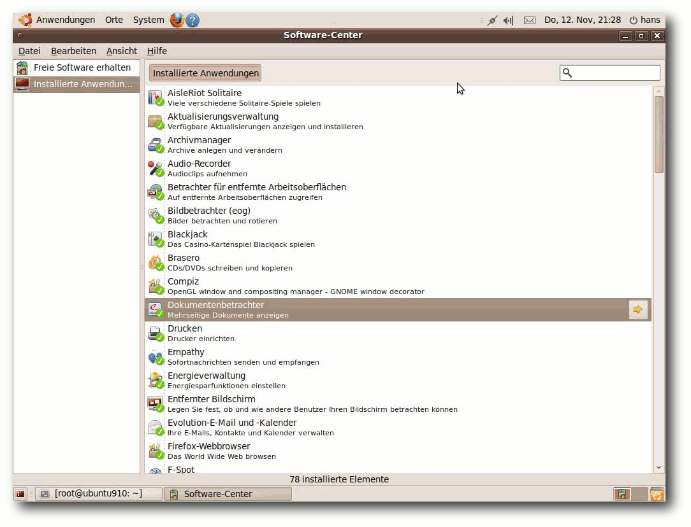

freiesMagazin Dezember 2009 (ISSN 1867-7991)
Topthemen dieser Ausgabe
Ubuntu 9.10 - Die neue Version „Karmic Koala“ vorgestellt
Am 29. Oktober 2009 wurde Ubuntu 9.10 freigegeben, welches mit sehr vielen Neuerungen aufwarten kann, über die zu einem kleinen Teil in diesem Artikel berichtet werden soll. Vor allem auf die Verbesserungen der jeweiligen Desktopumgebung wird ein besonderes Augenmerk gerichtet. Bei einem Umfang von alles in allem an die 30.000 Softwarepaketen enthält Ubuntu 9.10 natürlich weit mehr Neues als aufgeführt werden kann. (weiterlesen)
Google Summer of Code
Vom Google Summer of Code haben sicherlich alle schon einmal gehört, aber nur Wenige können sich so recht etwas darunter vorstellen. Dieser Artikel soll aus der Sicht zweier Google-Summer-of-Code-Teilnehmer erklären, worum es sich bei diesem Projekt handelt. (weiterlesen)
Java, Teil 2 - Grafische Programmierung mit Swing
Dieser Artikel soll über die Möglichkeiten der Entwicklung grafischer Java-Anwendungen mithilfe der Swing-Bibliothek informieren, Anfängern eine Starthilfe geben und Kenner zumindest mit Hintergrundinformationen versorgen. (weiterlesen)
Zum Index
Inhalt
Linux allgemein
Ubuntu 9.10 - Die neue Version „Karmic Koala“ vorgestellt
Google Summer of Code
Der November im Kernelrückblick
Anleitungen
Java, Teil 2 - Grafische Programmierung mit Swing
Erstellen geometrischer Skizzen mit kig
wmii: Weitere Konfiguration
Lösungen zum Artikel „Shebang - All der Kram“
Software
Mad Skills Motocross
Open Clip Art - Die vergessenen Grafiken
Magazin
Editorial
Leserbriefe
Veranstaltungen
Vorschau
Konventionen
Impressum
Zum Index
Editorial
Am Ende ist nicht immer SchlussYalms überraschendes Ende
Viele Leser waren überrascht, als es am 15. November auf unserer Webseite hieß: „Linux-Magazin Yalm eingestellt“ [1]. Yalm war, ähnlich wie freiesMagazin, ein Linux-Magazin für Einsteiger mit leichter Tendenz zu Ubuntu. Das Magazin startete im Oktober 2007, musste im November 2009 dann aber den Dienst einstellen. Die Gründe für die Einstellung waren vor allem fehlende Autoren und fehlende Helfer. Obwohl die Webseite eine Helferliste von über 20 Personen aufzählte, waren diese nicht so aktiv, dass das Magazin reibungslos jeden Monat veröffentlicht werden konnte. Aufgrund eines Serverproblems waren die Daten für die letzte geplante Ausgabe im November verloren und man entschied sich, gleich dort aufzuhören. Als Resultat haben wir einen der Yalm-Korrektoren in unser Team geholt und in Zukunft werden die Yalm-Autoren für freiesMagazin schreiben, wenn sie das denn wollen. Des Weiteren finden Sie alle Yalm-Ausgaben nun in einem extra Archiv [2] bei freiesMagazin, da wir ja glücklicherweise nicht an Platzmangel leiden, auch wenn manch einer das vermutet. Die Reaktionen auf das Yalm-Ende waren sehr einheitlich; die meisten Leser waren überrascht und fanden es schade, dass Yalm eingestellt wurde. Es gab aber auch Zustimmung für die „Zusammenlegung“ beider Magazine, denn dies wurde in der Vergangenheit schon öfters gefordert. Wo ist aber genau das Problem an der Sache? Man nennt es das „90:9:1“-Problem (auch wenn das sicherlich nicht der offizielle Name ist). Die Zahlen bedeuten, dass bei einem Projekt 90 % passiv konsumieren, 9 % Feedback geben und 1 % aktiv mithilft. Ehrlich gesagt: Würden diese Zahlen auf freiesMagazin zutreffen, hätten wir jeden Monat 100 Artikel und das Magazin würde aus allen Nähten platzen. Was aber verdeutlicht wird, ist, dass es sehr oft an Helfern fehlt, die ein Projekt mitgestalten. Wir rufen deshalb jeden zweiten oder dritten Monat dazu auf (wie auch diesmal, haben wir doch ein „schönes“ Negativbeispiel, was passieren kann, wenn Hilfe ausbleibt), dass sich neue Autoren finden, die für freiesMagazin schreiben. Oft sind es Zeitprobleme, die einen Leser (und potentiellen Autor) davon abhalten, einen Artikel anzufangen, was verständlich ist. Die meisten Leser unterschätzen sich aber selbst und denken, sie wüssten in einem Gebiet zu wenig oder sie könnten keine Artikel schreiben. Bisher hat es aber (fast) jede Einsendung ins Magazin geschafft, denn wir unterstützen die Autoren natürlich auch mit Rückmeldungen und Hinweisen. Daher: Wir brauchen neue Artikel! Die Januarausgabe ist gesichert, für Februar sieht es aber schon etwas schlechter aus. Grund ist auch, dass die Liste der geplanten Artikel immer weiter abnimmt, aber eben nichts nachkommt. Wenn Sie also Anregungen suchen, schauen Sie auf die Artikelwunschliste der Leser [3] oder schreiben Sie einfach über das, was Ihnen gefällt. Die Artikel können Sie dann anQualitätssicherung
Ab diesem Monat führen wir auch eine neue Qualitätssicherungsmaßnahme ein. Da für den Satz oder die Korrektur eines Artikels Satzteile umgestellt, gestrichen oder ergänzt werden müssen, ist es möglich, dass das Endergebnis dem Autor gar nicht zusagt. Aus diesem Grund erhält ab sofort jeder Autor nach dem Satz des Artikels diesen zur Draufsicht. Wenn er inhaltliche Fehler findet, kann er diese uns dann mitteilen und wir bessern es aus. Natürlich ist kein Autor verpflichtet, seinen Artikel noch einmal durchzulesen. Da aber am Ende immer der eigene Name über einem Artikel steht, ist es empfehlenswert. Hier denken wir, dass jeder Autor das Recht haben sollte, inhaltliche Fehler auszubessern. Natürlich heißt das nicht, dass der Artikel vom Autor um zig Passagen ergänzt oder komplett umgestellt werden sollte, weil ihm noch etwas eingefallen ist. Das verursacht nämlich nur unnötige Arbeit, da der Artikel komplett neu gesetzt werden müsste.Der Wettbewerb geht zu Ende
Nur noch eine Woche ist Zeit, dann ist der zweite Programmierwettbewerb von freiesMagazin beendet [5]. Bisher gibt es leider immer noch relativ wenige Einsendungen. Es ist im Übrigen sinnvoll, einen Beitrag nicht erst pünktlich zum Stichttag einzureichen, denn wir schauen uns jede KI ausführlich an und geben Tipps, wenn es irgendwo hängt. Nach dem 13. Dezember werden wir zwar noch fünf Tage lang - bis zum 18. Dezember (23:59 Uhr) - noch die Möglichkeit geben, Verbesserungen einzureichen, aber es werden keine neuen Einreichungen mehr angenommen. Daher gilt: Schicken Sie uns Ihren Beitrag frühestmöglich zu. Vor allem aber über weitere 3-D-Umsetzungen würden wir uns freuen. Der 50-Euro-Buchgutschein sucht sicherlich auch einen netten Besitzer.Januarausgabe wird verschoben
Noch ein Hinweis: Aufgrund der Feiertage Ende Dezember verschieben wir die Januarausgabe von freiesMagazin um eine Woche auf den 10. Januar 2010. Damit ist der Geekfaktor auch höher, wenn das Magazin zum Datum 10.01.10 erscheint. ;) Wir wünschen Ihnen vorab schöne Feiertage und einen guten Rutsch in das neue Jahr 2010. Und nun noch viel Spaß mit der neuen AusgabeIhre freiesMagazin-Redaktion Links
- http://www.freiesmagazin.de/20091115-linux-magazin-yalm-eingestellt
- http://www.freiesmagazin.de/yalm
- http://www.freiesmagazin.de/artikelwuensche
- http://www.freiesmagazin.de/mitmachen
- http://www.freiesmagazin.de/20091129-noch-zwei-wochen-bis-zum-wettbewerbsende
Zum Index
Ubuntu 9.10 - Die neue Version „Karmic Koala“ vorgestellt
von Hans-Joachim Baader Am 29. Oktober 2009 wurde Ubuntu 9.10 freigegeben, welches mit sehr vielen Neuerungen aufwarten kann, über die zu einem kleinen Teil in diesem Artikel berichtet werden soll. Vor allem auf die Verbesserungen der jeweiligen Desktopumgebung wird ein besonderes Augenmerk gerichtet. Bei einem Umfang von alles in allem an die 30.000 Softwarepaketen enthält Ubuntu 9.10 natürlich weit mehr Neues als aufgeführt werden kann. Redaktioneller Hinweis: Der Artikel „Ubuntu 9.10“ erschien erstmals bei Pro-Linux [1] unter der GNU Free Documentation License [2].Überblick über die Neuerungen
Ubuntu 9.10 kommt mit einem Kernel auf Basis von Linux 2.6.31.1 und den neuesten Versionen von GNOME (2.28.1) und von KDE (4.3.2). Im neuen Ubuntu wurde der Bootvorgang weiter beschleunigt. Durch den kompletten Verzicht auf das klassische System-V-Init wird das schon seit Längerem verwendete Upstart erst richtig effektiv. Als Bootmanager nutzt die freie Distribution nun GRUB2, das es unter anderem ermöglicht, direkt von einer ext4-Partition oder von RAID-Volumes zu booten. Das Dateisystem ext4 ist jetzt erstmals das Standard-Dateisystem. In früheren Versionen war die Nutzung von ext4 schon möglich, aber nicht als Bootpartition. Ferner können Anwender nun ihr Heimverzeichnis mit eCryptfs verschlüsseln. Die Option, das gesamte System zu verschlüsseln, besteht weiterhin, erfordert aber die Eingabe eines Passworts beim Systemstart. Der eingesetzte Kernel 2.6.31.1 unterstützt nun auch Kernel Mode Setting (KMS). Vor allem ältere Grafikkarten und Intel-Chips profitieren von einer flüssigeren Umschaltung des Grafikmodus (u. a. beim Bootvorgang) und zuverlässigeren Suspend-Routinen. Angefangen mit dieser Version begann bei Ubuntu auch der Übergang vom Hardware Abstraction Layer (HAL) als Hardwarezwischenschicht auf udev. Um die Energieverwaltung kümmert sich jetzt DeviceKit-power. Der neue Kernel unterstützt darüber hinaus eine breitere Palette von Hardware. Die Mobil-Variante von Ubuntu 9.10, Ubuntu Netbook Remix, sollte auf fast allen Netbooks funktionieren. Der GNOME-eigene Webbrowser Epiphany setzt nun auf Webkit statt wie bisher auf die Gecko-Engine. Die Softwareverwaltung erfolgt jetzt mittels des Software-Centers, das die alten Werkzeuge ablösen soll und die Pakete wie in einem Applikationsshop listet. Neu in Ubuntu 9.10 ist auch der Einsatz von Canonicals Dienst „Ubuntu One“. Anwender, die Ubuntu One nutzen wollen, erhalten 2 GB Speicherplatz und können auf dem Server des Anbieters nicht nur Dateien, sondern auch Notizen aus Tomboy oder PIM-Informationen aus Evolution synchronisieren. Damit ist es möglich, diese Daten auf verschiedenen Ubuntu-Installationen immer auf dem neuesten Stand zu halten. Die Synchronisierung erfolgt unter anderem mit der dokumentenorientierten Datenbank CouchDB. Um Ubuntu One nutzen zu können, wird ein Launchpad-Account benötigt, den man sich kostenlos anlegen kann. Die Server-Edition enthält die bekannten Server-Anwendungen in den neuesten stabilen Versionen. Die Virtualisierung wurde mit der Aktualisierung von KVM verbessert. Außerdem ist die Ubuntu Enterprise Cloud als vollständig unterstützte Technologie enthalten. Mit dieser können Anwender ihre eigene, vollständig mit freier Software realisierte Cloud erstellen und mit dieser ohne die Sorge arbeiten, dass ihre vertraulichen Daten auf externe Rechner gelangen, wie es bei einer öffentlichen Cloud der Fall wäre. Ferner steht Ubuntu 9.10 Server wie schon die Vorgängerversion als Option in der Elastic Compute Cloud (EC2) von Amazon zur Verfügung. Ein Wechsel zwischen öffentlicher und privater Cloud sollte problemlos möglich sein, da die Images dieselben sind. Mit dieser Version beginnt Canonical einen Online-Shop für virtuelle Appliances anzubieten, zunächst als Vorschau mit einer Beispiel-Appliance. Der Store soll bald mit weiteren Appliances gefüllt werden. Eine weitere unter den zahlreichen Neuerungen ist die Integration von WBEM (Web Based Enterprise Management), sodass sich Ubuntu-Server mit den bekanntesten Systemverwaltungsprogrammen administrieren lässt. Django wird als Framework für Webserver vollständig unterstützt. MySQL wurde auf Version 5.1 aktualisiert und die Anbindung an Verzeichnisdienste und Single-Sign-On wurde verbessert. Für die Server-Edition ist Support von Canonical erhältlich [3]. Die Server-Variante von Ubuntu soll in diesem Artikel allerdings nicht betrachtet werden.Der GNOME-Desktop von Ubuntu 9.10.
Installation
Ubuntu kann auf verschiedene Arten installiert werden: Von einem Live-System aus, das als CD oder (umfangreichere) DVD verfügbar ist, durch direktes Hochfahren eines Installationsprogramms (CD oder DVD) oder durch eine Installation von der Alternate-CD, die im Textmodus läuft, aber wesentlich mehr Flexibilität besitzt. Für Ubuntu 9.10 werden nach wie vor 256 MB RAM auf dem Desktop (GNOME, KDE) als Mindestanforderung angegeben. Im Test lief das System mit 512 MB und mehr aber wesentlich besser. Besonders unter KDE wird das Arbeiten mit nur 256 MB RAM fast unerträglich. Für die Live-CDs sind mindestens 512 MB erforderlich. Die Live-CD legt 60 MB Swap im RAM an, was zusätzlich zum Speicherbedarf beiträgt. Xubuntu und die Server-Edition sollten weiterhin mit 128 MB auskommen. Ubuntu wird wie in den Vorversionen als Installations-CD in den Varianten Desktop, Alternate und Server angeboten, wobei hier nur die Installation von der Desktop-CD kurz vorgestellt werden soll. Wer den Logical Volume Manager (LVM) benötigt, sollte aber auf die textbasierte Installation von der Alternate-CD zurückgreifen, da in der Desktop-Variante diese Möglichkeit nach wie vor fehlt. Die Installation läuft fast genauso ab wie bei der grafischen Installation. Durch Bootoptionen steht aber eine erweiterte Installation zur Verfügung, mit der man weitgehende Kontrolle über den ganzen Vorgang hat. Die Desktop-CD lässt sich auch als Live-System nutzen. Auf dem, bis auf einen Ordner mit Beispielen, leeren Desktop des Live-Systems erscheint ein Icon zum Start des grafischen Installationsprogramms. Das Live-System entspricht weitgehend dem System, das auf der Festplatte installiert wird. Die Desktop-CD startet das Live-System etwa so schnell wie in Version 9.04. Eine Beschleunigung gegenüber dem Vorgänger ließ sich nicht feststellen. Das Update einer bestehenden Ubuntu-Installation ist nur von Version 9.04 möglich. Dazu gibt es auf den Ubuntu-Webseiten eine hinreichend einfache Anleitung zum Update [4]. Wer zusätzliche Pakete aus anderen Repositorien als „main“ installiert hat, kann mitunter auf Schwierigkeiten stoßen. Die ausgeklügelte Paketverwaltung kann diese jedoch erfahrungsgemäß meist lösen. Mitunter kann es dafür nötig sein, die zusätzlichen Pakete zu deinstallieren und nach dem Update wieder zu installieren. Das Upgrade ersetzt auch den Kernel, wie man es von Ubuntu bereits kennt. Der alte Kernel bleibt über eine Auswahlmöglichkeit im Bootmanager erhalten. Alles in allem ist der Installationsvorgang weitgehend unverändert geblieben. Die einzige sichtbare Änderung ist die Möglichkeit, ein verschlüsseltes Dateisystem anzulegen.Kubuntu-Desktop beim ersten Start.
Laufender Betrieb
Wie die Live-CD fährt auch das installierte System schnell hoch. Eine Beschleunigung gegenüber der Vorversion konnte aber, im Gegensatz zur Ankündigung von Ubuntu, nicht festgestellt werden. Im Folgenden sollen die beiden umfassendsten Desktopumgebungen GNOME und KDE zusammen behandelt werden. Ubuntu 9.10 bleibt unter GNOME weiter bei den Brauntönen des Themes „Human“. Der standardmäßig eingestellte Desktop-Hintergrund weist diesmal einen einfachen Farbverlauf von bräunlich über orange bis zu hellgelb auf. Im Standard-Lieferumfang stehen nun ein paar recht nette Alternativen zum Hintergrund und ein oder zwei neue Themes zur Verfügung. Weitere Themes und erst recht Hintergrundbilder findet man aber im Web zur Genüge. KDE dagegen ist in Blautönen gehalten, die durch das neue KDE-Standard-Theme „Air“ definiert werden. Über KNewStuff lassen sich komfortabel alternative Themes, Hintergrundbilder und mehr suchen. Einige sind bereits im Lieferumfang enthalten und müssen nur ausgewählt werden. KNewStuff ist insgesamt deutlich komfortabler als das Äquivalent in GNOME, bei dem man direkt oder indirekt den Webbrowser benutzen muss. Wie gewohnt hat Root keinen direkten Zugang zum System. Zugang zum Root-Account ist aber über das Kommando sudo vorhanden. Damit kann man jeden beliebigen Befehl ausführen, nachdem man sein eigenes Passwort eingegeben hat. Wenn man, nachdem man als Root eingeloggt ist, ein Passwort vergibt, ist auch ein direkter Root-Login möglich. Der GNOME-Desktop benötigt mit einem Terminalfenster ohne weitere offene Programme etwa 200 MB RAM, davon 8 MB im Swap. Das ist gegenüber der Vorversion nahezu unverändert. KDE benötigt fast 50 MB mehr, das ist der Grund, warum es sich mit 256 MB sehr zäh anfühlt. Aber schon ab 512 MB läuft alles flüssig, und da einigermaßen aktuelle Rechner eher 1-4 GB RAM haben, gibt es hier kein Problem. Die neue Version 2.28.1 von GNOME bringt den Benutzern weitgehend das gewohnte Erscheinungsbild ohne böse Überraschungen. Auf Schaltflächen wird nun kein Icon mehr angezeigt, im Panel-Menü blieben die Icons allerdings enthalten. Der Standardbrowser ist nicht Epiphany sondern Firefox 3.5.5. Als Office-Suite ist OpenOffice.org 3.1.1 installiert. Neben den wichtigsten GNOME-Anwendungen sind noch einige wenige weitere wichtige Anwendungen wie GIMP vorinstalliert. Viel mehr ist durch den begrenzten Platz auf der Installations-CD nicht möglich. Firefox enthält die vorinstallierte Erweiterung „Ubuntu Firefox Modifications“ jetzt in Version 0.8. Darin ist der bereits bekannte Plugin-Finder-Service enthalten. Will man beispielsweise ein Flash-Element in einer Webseite abspielen, lassen sich komfortabel passende Plugins finden und installieren. Testweise wurde Gnash 0.8.6 installiert und man konnte damit unter anderem YouTube-Videos und verschiedene Werbebanner einwandfrei sehen. (Über die Verwendung des Wortes „einwandfrei“ für letztere kann man allerdings streiten.) Auch in den bekannten Anwendungen Rhythmbox und Totem ließen sich GStreamer-Plugins, welche die standardmäßig nicht unterstützten Formate kennen, wie gewohnt problemlos installieren. Fast jedes Audio- und Video-Format ließ sich damit abspielen, allerdings verwunderte es, dass die Wiedergabe eines MPEG-Video nicht möglich war. Das ist besonders deshalb ein Ärgernis, da es in Ubuntu 9.04 noch funktionierte. Möglicherweise liegt der Grund in der neuen Fähigkeit von Totem, sich in Videos Einzelbild für Einzelbild zu bewegen, denn das Video wurde offensichtlich korrekt dekodiert – es wurde nur nicht abgespielt. In KDE 4.3.2 werden die vielen Verbesserungen im Plasma-Desktop die meisten Kritiker sicherlich verstummen lassen. Die Plattform enthält jetzt die Anfänge der Integration des „Sozialen Desktops“. Ziel des „Sozialen Desktops“ ist es, eine offene Plattform zur Zusammenarbeit, Kommunikation und gemeinsamer Nutzung von Daten zu sein, die die Kontrolle nicht an eine externe Organisation abgibt. Unter KDE wird der Benutzer mit dem Benachrichtigungssystem durch die Paketverwaltung gleich beim ersten Login darauf aufmerksam gemacht, dass zusätzliche Codecs die Multimedia-Tauglichkeit erhöhen würden. Das Angebot, diese herunterzuladen und zu installieren, sollte man gleich wahrnehmen. Danach funktionieren proprietäre Audio- und Videoformate sowie Flash ohne weiteres Zutun. Allerdings sind sowohl GStreamer- als auch Xine- und ffmpeg-Komponenten installiert; vielleicht trägt das mit zu dem höheren Speicherverbrauch bei.Installation von Codecs leichtgemacht.
Als Standardbrowser ist Konqueror eingerichtet. Der neue Webbrowser Arora funktioniert bereits recht gut. Wer allerdings eine schlanke Alternative zu Konqueror erwartet, dürfte enttäuscht werden. In den Tests benötigte der Browser trotz des etwas geringeren Funktionsumfangs mehr Speicher als Konqueror und stellte Webseiten deutlich langsamer dar. Die HTML-Komponente von KDE zeigte eine unerwartete Auffälligkeit: Alle JPEG-Bilder wurden inkorrekt dargestellt. Dies wirkte sich sowohl in den Browsern Konqueror und Arora als auch in der Online-Hilfe aus. In Ubuntu 9.04 funktionierte das noch einwandfrei, somit dürfte es sich auch hier um eine ärgerliche Regression handeln. Da noch kein entsprechender Eintrag im Bugtracker von Ubuntu zu finden war, liegt die Vermutung nahe, dass das Problem nur unter seltenen Bedingungen auftritt. Die Entwicklung dieses Fehlers kann man unter der Nummer 481604 verfolgen [5]. Als Office-Suite ist auch unter KDE OpenOffice.org 3.1.1 installiert. KOffice lässt sich nachinstallieren, allerdings nur in der alten Version 1.6.3, da die neue Version 2.0 bekanntlich noch unvollständig ist. Die KDE3-Bibliotheken sind vorhanden, denn es gibt nach wie vor zahlreiche Pakete, die sie noch benötigen. Mit Ausnahme von KDevelop und den anderen Entwicklungswerkzeugen befindet sich aber keines davon im Kern von KDE. Das CD-Brennprogramm K3b liegt in der an KDE4 angepassten, aber noch im Test befindlichen Version 1.68 vor. Es ist kein Bildbearbeitungsprogramm vorinstalliert: Für GIMP war entweder kein Platz oder die Entwickler von Kubuntu wollten es nicht und für Krita gelten die gleichen Überlegungen wie für KOffice. Wer von KDE3 auf KDE4 wechselt, wird aufgrund der Umgewöhnung zunächst vielleicht eher ablehnend reagieren. Doch gibt es bis auf den höheren Speicherverbrauch kaum noch gerechtfertigte Kritikpunkte. Einige Kleinigkeiten funktionieren noch nicht so, wie man sie von KDE3 gewohnt war. So lässt sich in der Konsole kein Kontextmenü auf den Tabs öffnen; die früher dort vorhandenen Funktionen stehen aber im Menü zur Verfügung. Ein anderer Mangel ist, dass man das Verschieben von Applets in der Systemleiste kaum intuitiv findet und es anscheinend auch nicht dokumentiert ist. Es ist aber dennoch möglich. Man muss in der Systemleiste die Miniprogramme entsperren, sofern sie „gesperrt“ sind. Dann kann man das „Cashew“ genannte Symbol unten rechts anklicken, worauf man die Größe der Leiste ändern, aber auch die Applets verschieben kann. In KDE3 ging das einfacher. Alles in allem hat KDE in Version 4.3 gegenüber KDE3 aber enorm an Funktionalität und Modernität gewonnen. Man kann Kubuntu nicht einmal mehr vorwerfen, eine im Vergleich mit anderen Distributionen schlechte Integration von KDE4 vorgenommen zu haben. Zwar fehlt von neuen Anwendungen eine KDE-Version, aber dass diese zuerst für GNOME oder GTK entwickelt werden, ist aufgrund der Firmenpolitik von Canonical klar. Zwei Versionen gleichzeitig zu entwickeln wäre weder realistisch noch sinnvoll. Beide Desktopumgebungen haben noch Optimierungsbedarf, was die Speicherbelegung angeht. 200 MB und mehr sind einfach viel zu viel und führen zu vielen Zugriffen auf den im Vergleich zu den Caches langsamen Hauptspeicher. Beide Umgebungen verwenden Komponenten in Python, die dauerhaft laufen und Dutzende von MB zusätzlichen Speicher benötigen. Diese Komponenten durch solche in C oder C++ zu ersetzen würde deutliche Vorteile bringen. Generell spricht allerdings nichts gegen Anwendungen in anderen Programmiersprachen, also auch Python, wenn dies den Anwendern nutzt.
Das Benachrichtigungssystem
Das in Ubuntu 9.04 neu eingeführte integrierte Benachrichtigungssystem war äußerst mangelhaft. In der neuen Version wurde es überarbeitet. Nach wie vor handelt es sich um Pop-Up-Fenster, die für kurze Zeit erscheinen. Es gibt eine Unterteilung in kritische und nichtkritische Benachrichtigungen. Sie sind nun länger zu sehen, wobei die Zeit mit der Textlänge wächst. Im Nicht-Stören-Modus werden nur die kritischen Benachrichtigungen angezeigt. Dieser Modus ist immer dann in Kraft, wenn eine Anwendung maximiert läuft, also den gesamten Bildschirm einnimmt. Perfekt ist diese Lösung noch lange nicht. Es gibt keine Möglichkeit, die Benachrichtigungen zu quittieren, indem man zum Beispiel darauf klickt. Die Benachrichtigungen erscheinen nacheinander, selbst wenn sie gleichzeitig erzeugt wurden und sie kleben nicht mehr oben am Panel, sondern sind ein Stück nach unten versetzt. Vielen Benutzern scheint dies nicht zu gefallen. Verpasst man eine Benachrichtigung, dann ist sie weg, und abgesehen von einer Debug-Datei lässt sie sich auch nicht mehr nachvollziehen. Unter KDE wird „knotify4“ verwendet, das einen anderen Mechanismus verwendet. Es lieferte nur einen einzigen Grund zur Beanstandung und lieft sonst tadellos. Wenn man nämlich (versehentlich) eine Benachrichtigung quittiert, ohne sie zu bearbeiten, kann man sie nicht mehr zurückholen. Benachrichtigungen, die wichtig genug sind, sollten daher besser (evtl. zusätzlich) per E-Mail versandt werden. Davon abgesehen arbeitet das Benachrichtigungssystem aber vorbildlich, und es sei die Frage gestattet, warum unter GNOME nicht eine in der Bedienung identische Lösung verwendet wird.Eine Benachrichtigung schlägt in Ubuntu auf.
Ubuntu One
Ubuntu One [6] ist der neue Dienst von Canonical, der nun allen Anwendern zur Verfügung steht. Man erreicht ihn über das GNOME-Menü „Orte“. Unter KDE ist er nicht vorinstalliert, kann jedoch durch die Installation des Pakets ubuntuone-client-gnome bereitgestellt werden. Anwender, die Ubuntu One nutzen wollen, benötigen einen Launchpad-Account, den man sich kostenlos anlegen kann. Alle Benutzer von Ubuntu One erhalten 2 GB Speicherplatz und können auf dem Server von Canonical nicht nur Dateien ablegen, sondern auch Notizen aus Tomboy oder PIM-Informationen aus Evolution synchronisieren. Diese Objekte kann man dann freigeben, sodass auch andere Benutzer von Ubuntu One zugreifen können, optional nur lesend. Die Freigabe erfolgt immer für spezifische Ordner und wird nur bestimmten Benutzern erteilt. Letztlich ist Ubuntu One ein sehr einfaches System, das derzeit noch kaum mehr als eine Online-Dateiverwaltung mit Rechtevergabe ist. Ist Ubuntu One erst einmal gestartet, was an der Wolke im Panel zu sehen ist, laufen drei Daemons, die auch nach dem Ausloggen weiter aktiv sind. Davon sind zwei in Python und einer (CouchDB) in Erlang geschrieben. Auch hier darf man sich wieder die Frage nach der Speichereffizienz stellen.Ubuntu One im unberührten Zustand.
Paketverwaltung und Updates
Die größte Änderung in der Paketverwaltung ist das Software-Center, das es vorläufig nur unter GNOME gibt. Es ist in der Art eines Anwendungsstores aufgebaut, verwaltet aber auch die installierten Anwendungen. In der Kategorie-Ansicht kann man die verfügbare Software aus einem Bereich wählen, die dann als Liste angezeigt wird. Mit der Suche kann man die Auswahl weiter einschränken. Klickt man ein Softwarepaket in der Liste an, erhält man Buttons zum Installieren (bei installierten Paketen einen zum Entfernen) und zum Aufrufen der Webseite. Ferner werden eine Beschreibung, ein Screenshot und weitere Informationen angezeigt. Erstmals sagt Ubuntu auch ganz klar, welchen Unterstützungsstatus das Paket besitzt: Gehört es zum Kern der Distribution, wird es Aktualisierungen bis April 2011 geben. Ansonsten gibt es einen Hinweis, dass Canonical keine Aktualisierungen bereitstellen wird. Das Software-Center funktioniert einwandfrei und kann als eine Weiterführung des Konzepts von Debians „GoPlay“ angesehen werden (siehe „Geh spielen! - GoPlay zur Suche nach Software einsetzen“, freiesMagazin 05/2009 [7]), in das gleich die Paketverwaltung integriert wurde. Das Software-Center kann allerdings die Paketverwaltung Synaptic noch nicht ersetzen. Im Gegensatz zum einfach gehaltenen Software-Center stellt Synaptic nämlich ein ziemlich vollständiges und ausgereiftes Frontend für die Paketverwaltung APT dar. Der Hinweis zum Unterstützungsstatus wird auch in Synaptic angezeigt.Die Bereiche des Software-Centers
Die offiziellen Repositorys von Ubuntu 9.10 sind weiterhin „main“, „universe“, „multiverse“ und „restricted“. Letzteres ist das Archiv, in dem sich unterstützte, aber unfreie Pakete befinden. Darunter befinden sich die Grafikkartentreiber von NVIDIA und anderen sowie Firmware-Pakete und Treiber, die nicht unter vollständig freien Lizenzen stehen. Sie können von Ubuntu grundsätzlich nicht so wie die anderen Pakete unterstützt werden, da der Quellcode teilweise nicht zugänglich ist. Im Gegensatz zu „main“ wird Software, die im Repository „universe“ zu finden ist, nicht offiziell unterstützt. Die Softwarepakete in „universe“ sind frei, während jene in „multiverse“ unfrei sind. Daneben existiert noch das Repository „partner“, das kostenlos erhältliche Software von Partnerunternehmen beherbergt. Unter KDE wird nun KPackageKit zum Verwalten und Aktualisieren von Software verwendet. Leider ist die Suche nach Softwarepaketen absolut nicht intuitiv. Darüber hinaus funktioniert sie nicht korrekt: Gibt man ins Suchfeld beispielsweise „*-de“ ein, so bleibt das Programm im Zustand „Warte auf Starten des Dienstes“ hängen und lässt sich anschließend nicht mehr sinnvoll benutzen, sodass man es schließen muss. Es ist daher kein Wunder, dass viele Benutzer KPackageKit nur für die Software-Updates benutzen, für die Installation und Deinstallation dagegen Synaptic. Für den Zweck der Updates funktioniert KPackageKit einwandfrei, allerdings tritt gelegentlich ein Fehler auf, der schon in Ubuntu 9.04 beobachtet werden konnte: Das System meldet, dass ein anderes Programm schon die Paketverwaltung benutzt. Wiederholt man die Aktion, wird sie aber fehlerfrei ausgeführt. 
Softwareliste im Software-Center.
Fazit
Ubuntu 9.10 ist eine rundum empfehlenswerte Distribution. Das heißt nicht, dass sie frei von Fehlern wäre. Der Preis, den man für Aktualität zahlen muss, ist nun einmal, dass es anfänglich einige Fehler geben kann. So hat es auch jetzt schon in weniger als zwei Wochen seit dem Erscheinen von Ubuntu 9.10 über einhundert Paketupdates gegeben. Alle Anwender, die nicht die Zeit oder die Fähigkeit haben, sich mit Fehlern auseinanderzusetzen, sollten daher einige Wochen warten, bevor sie auf Ubuntu 9.10 aktualisieren. Dieses Problem ist allerdings nicht spezifisch für Ubuntu. Alle Distributionen, die in kurzen Abständen in neuen Versionen herauskommen, können naturgemäß nicht so ausgereift sein wie die mit längeren Zyklen. Wenn die größten Probleme allerdings beseitigt sind, haben die Benutzer eine der empfehlenswertesten Linux-Distributionen in den Händen. Kritik muss sich Ubuntu allerdings auch gefallen lassen. So konnten nicht alle von Canonical vollmundig angekündigten Verbesserungen tatsächlich nachempfunden werden. Außerdem stellt sich die Frage, warum Canonical den Benutzern immer wieder unausgereifte Software (beispielsweise das GNOME-Benachrichtigungssystem oder KPackageKit) zumutet. Wenn schon bekannt ist, dass eine Neuerung noch nicht vernünftig läuft, dann sollte sie eben weggelassen oder eine Alternative installiert werden. Links- http://www.pro-linux.de/berichte/ubuntu0910.html
- http://www.gnu.org/copyleft/fdl.html
- http://www.canonical.com/services
- http://www.ubuntu.com/getubuntu/upgrading
- https://bugs.launchpad.net/ubuntu/+source/kde4libs/+bug/481604
- http://voices.canonical.com/ubuntuone/
- http://www.freiesmagazin.de/freiesMagazin-2009-05
| Autoreninformation |
| Hans-Joachim Baader befasst sich seit 1993 mit Linux. 1994 schloss er sein Informatikstudium erfolgreich ab und machte die Softwareentwicklung zum Beruf. Seit 1995 arbeitet er freiberuflich. Daneben ist er einer der Betreiber von Pro-Linux.de. |
Zum Index
Google Summer of Code
von Eva Hörmann und Janus Weil Vom Google Summer of Code haben sicherlich alle schon einmal gehört, aber nur Wenige können sich so recht etwas darunter vorstellen. Dieser Artikel soll erklären, worum es sich bei diesem Projekt handelt.Was ist Google Summer of Code?
Google Summer of Code ist ein Programm, bei dem Studenten aus aller Welt von Google Inc. ein Stipendium erhalten, um während der Sommermonate an verschiedenen Open-Source-Projekten mitzuarbeiten. Ziel des Programms ist es unter anderem, neue Entwickler für die Open-Source-Gemeinde zu gewinnen und damit die Entwicklung Freier Software zu fördern. Seit dem Beginn im Jahr 2005 fand das Programm jährlich statt und brachte insgesamt fast 3300 Studenten und mehr als 5000 Mentoren aus fast 100 Ländern weltweit mit über 230 Open-Source-Projekten in Kontakt [1]. Studenten, deren Bewerbung bei Google Summer of Code erfolgreich war, bekommen einen oder mehrere Mentoren der teilnehmenden Open-Source-Organisation zur Seite gestellt, um ein von ihnen vorgeschlagenes Projekt zu bearbeiten. Damit erhalten die Studenten professionelle Einblicke in die Entwicklung von Software und die Möglichkeit, eigene Ideen mit einzubringen. Im Gegenzug gewinnen die teilnehmenden Open-Source-Organisationen motivierte und talentierte neue Entwickler, die meist auch noch weit über den Sommer hinaus aktiv sind. Und natürlich entsteht durch den Google Summer of Code viel neuer freier Code, der letztendlich allen zugute kommt.Wer macht mit?
Zunächst bewerben sich die interessierten Organisationen für eine Teilnahme bei Google Summer of Code. In den vergangenen Jahren nahmen diverse Organisationen aus den verschiedensten Bereichen teil, wie etwa populäre Distributionen (openSUSE, Fedora, Debian), die Desktopumgebungen KDE und GNOME sowie Anwendungen wie Mozilla, Gimp und VideoLAN. Ebenfalls stark vertreten waren Projekte aus den Bereichen Programmierung (Subversion, GCC, Eclipse), Content Management (Drupal, Plone, Joomla) und sogar Spiele wie ThousandParsec und BZFlag. Eine vollständige Liste der in 2009 teilnehmenden Organisationen findet man auf der Übersichtsseite [2]. Aus den sich bewerbenden Organisationen treffen die Programmverantwortlichen des Google Summer of Code eine Auswahl derer, die zum Programm zugelassen werden. Jeder akzeptierten Organisation wird eine gewisse Anzahl an Plätzen zugewiesen, die dann an die Studenten vergeben werden. Bei der Auswahl der teilnehmenden Organisationen sind zum einen natürlich diejenigen für Google interessant, aus deren Förderung sich Google einen direkten Nutzen verspricht. Darüber hinaus unterstützt Google Organisationen, die in der Open-Source-Gemeinschaft eine wichtige Rolle spielen und deren Unterstützung einen großen Einfluss auf die Weiterentwicklung von Freier Software allgemein hat. Weiterhin ist wichtig, dass die sich bewerbende Organisation genügend Kapazitäten hat, um die Studenten zu betreuen, und angemessene Projektideen anbietet.Wie kann man als Student teilnehmen?
Nachdem von Google die Liste der teilnehmenden Organisationen bekannt gegeben wurde, bewerben sich die Studenten direkt bei diesen auf ein bestimmtes Projekt. Dabei stellt jede Organisation eine Liste von Projektvorschlägen zur Verfügung. Allerdings können auch die Studenten selbst eigene Vorschläge einbringen. Formal müssen die Bewerber dann innerhalb des Bewerbungszeitraumes einen schriftlichen Projektvorschlag einreichen, in dem die angestrebten Ziele des Projekts festgelegt werden. Da die Organisationen die für sie interessanten Projekte selbst aussuchen, ist es empfehlenswert, so früh wie möglich mit der Organisation und möglichen Mentoren in Kontakt zu treten, um Ideen und Projektvorschläge zu diskutieren. Eine Auflistung der studentischen Projekte 2009 findet man auf der Übersichtsseite [3].Wer kann sich bewerben?
Google Summer of Code steht Studenten aller Fachrichtungen offen, die zu Beginn des Programms mindestens 18 Jahre alt sind. Voraussetzung ist lediglich die Immatrikulation als Voll- oder Teilzeitstudent an einer Fach- bzw. Hochschule oder einer ähnlichen Institution. Auch Promotionsstudenten können sich bewerben. Während die meisten Teilnehmer des Programms Studenten der Informatik sind, sind auch ingenieur- und naturwissenschaftliche Fächer stark vertreten. Natürlich ist die Bewerbung aber an kein bestimmtes Studienfach gebunden. Während es von Vorteil ist, bereits Erfahrungen und Kontakte im Open-Source-Bereich gesammelt zu haben, ist dies keineswegs erforderlich. Es ist ein Hauptanliegen des Google Summer of Code, auch Neulinge an die Open-Source-Gemeinschaft heranzuführen und in diese zu integrieren.Wie ist der Ablauf nach einer erfolgreichen Bewerbung?
Hat man als Student das Bewerbungsverfahren bei einer der teilnehmenden Organisationen erfolgreich überstanden und wurde mit seinem Projekt ausgewählt, steht dem Programmieren nichts mehr im Wege. Man bekommt von der Organisation einen Mentor zugeteilt, der für die gesamte Programmdauer von drei Monaten bei Fragen und Problemen unterstützend zur Seite steht. Die ersten Wochen sind dazu gedacht, sich mit dem Projekt und der Entwicklergemeinde vertraut zu machen und mit dem Mentor das weitere Vorgehen zu planen. Nach dieser sogenannten „Community Bonding Period“ beginnt die eigentliche Arbeitsphase. In der Regel erfolgt die gesamte Kommunikation mit dem Mentor und anderen Entwicklern über das Internet, meist unter Verwendung von Wikis, Mailinglisten, Foren oder Instant Messaging. Der entwickelte Quellcode wird typischerweise über Versionskontrollsysteme wie etwa Subversion verwaltet. Der genaue Arbeitsablauf ist natürlich von Organisation zu Organisation unterschiedlich. Nach Ablauf der ersten Hälfte des Google Summer of Code findet eine Evaluation statt, bei der sowohl der Mentor als auch der Student die bisherige Arbeit bewerten und gegebenenfalls die Zielsetzung für die restliche Programmdauer neu festlegen. Ist der Mentor der Meinung, dass die bisherigen Leistungen des Studenten nicht den Anforderungen entsprechen, so kann zu diesem Zeitpunkt das Projekt vorzeitig beendet werden. Dies liegt vollständig im Ermessensspielraum des Mentors. Nach einer erfolgreichen Zwischenevaluation geht die Arbeit am Projekt in die zweite Runde, bis am Ende des Programms eine erneute Evaluation erfolgt, bei der endgültig über den erfolgreichen Ausgang des Projekts entschieden wird. Der Anteil der Studenten, die ihr Projekt erfolgreich beendeten, lag in den letzten Jahren jeweils zwischen 80 % und 85 %. Diese und andere statistische Daten sind auf der Übersichtsseite zu finden [4]. Ist die Abschlussevaluation positiv ausgefallen, lädt der Student den während des Programmverlaufs entstandenen Code auf Googles Project-Hosting-Seite code.google.com [5] hoch, wo er für jeden einsehbar ist.Was bringt mir das?
Die Arbeit an einem Google-Summer-of-Code-Projekt lohnt sich in vielerlei Hinsicht. Auf der einen Seite unterstützt Google jedes akzeptierte Projekt mit einer Summe von 5000 US-Dollar, wovon 500 US-Dollar direkt an die betreuende Organisation fließen. Der Rest wird in drei Etappen an den Studenten ausgezahlt: Die ersten 500 US-Dollar bekommt man bereits als „Vorschuss“ bei Aufnahme in das Programm. Weiterhin wird nach jeder erfolgreichen Evaluation ein Betrag von 2000 US-Dollar ausgezahlt. Fällt die Evaluation negativ aus, wird das Projekt beendet und kein weiteres Geld ausgezahlt. Neben diesem finanziellen Anreiz wird die Motivation der Studenten auch durch kleinere Sachgeschenke angeheizt. Etwa erhält jeder teilnehmende Student schon zu Beginn des Programms ein kleines Überraschungsgeschenk. Während dies in den vorigen Jahren Bücher waren, gab es 2009 ein Notizbuch und eine Jahresmitgliedschaft in der Association for Computing Machinery (ACM [6]). Nach erfolgreicher Beendigung des Programms erhalten alle Studenten und Mentoren das heiß begehrte Google-Summer-of-Code-T-Shirt und ein Zertifikat, das die Teilnahme am Programm bescheinigt. Für die Mentoren organisiert Google jedes Jahr den sog. „Mentor Summit“. Zu diesem Treffen werden die Mentoren für ein Wochenende in den Firmenhauptsitz von Google nach Mountain View, Kalifornien, eingeladen. Dort werden verschiedene Vorträge abgehalten und die Teilnehmer erhalten die Gelegenheit, sich gegenseitig kennenzulernen und auszutauschen [7]. Den größten Gewinn für Studenten wie Mentoren stellen jedoch letztendlich die vielen Erfahrungen dar, die man im Laufe des Sommers durch die Arbeit an seinem Projekt machen kann. Als Student bekommt man einen Einblick in die organisatorischen Strukturen und Arbeitsabläufe, die hinter der Entwicklung eines Open-Source-Programmes stecken, und erhält die Chance, aktiv daran mitzuwirken. Auf diese Weise bietet Google Summer of Code einen optimalen Einstieg in die Open-Source-Programmierung.Wo gibt es weitere Informationen?
Weitere Informationen zu Google Summer of Code 2009 findet man auf den Projekt-Übersichtsseiten [1] [8]. Links- http://socghop.appspot.com/
- http://socghop.appspot.com/program/accepted_orgs/google/gsoc2009
- http://socghop.appspot.com/program/list_projects/google/gsoc2009
- http://code.google.com/p/google-summer-of-code/wiki/ProgramStatistics
- http://code.google.com/
- http://www.acm.org/
- http://gsoc-wiki.osuosl.org/index.php/2009
- http://code.google.com/soc/
| Autoreninformation |
| Eva Hörmann und Janus Weil nahmen 2009 beide am Google Summer of Code teil. Eva Hörmann implementierte dabei einen Algorithmus zur Berechnung von Regressionsbäumen für das R Project for Statistical Computing, wohingegen Janus Weil für die GNU Compiler Collection am Fortran Compiler gfortran arbeitete. |
Zum Index
Der November im Kernel-Rückblick
von Mathias Menzer Basis aller Distributionen ist der Linux-Kernel, der fortwährend weiterentwickelt wird. Welche Geräte in einem halben Jahr unterstützt werden und welche Funktionen neu hinzukommen, erfährt man, wenn man den aktuellen Entwickler-Kernel im Auge behält.Release Candidates
Die Entwicklung des Kernel 2.6.32 schreitet weiter voran, diesen Monat mussten die Entwickler jedoch einige größere Fehler finden und beseitigen. So wurde die Veröffentlichung des -rc6 [1] durch einen Fehler in Ext4 verzögert, der zu Datenverlusten nach unsauberem Abschalten des Systems führte. Der Auslöser lag in einer erst kürzlich aktivierten Checksummen-Prüfung des Journals, die nun erst einmal wieder abgestellt wurde, bis die genauen Hintergründe geklärt sind. Außerdem in der sechsten Vorabversion enthalten: ein Patch für eine im Oktober bekannt gewordene Lücke [2], die es ermöglicht, am lokalen System SuperUser-Rechte zu erlangen und die alle bisherigen Kernel-Version der Reihe 2.6 betreffen soll (CVE-2009-3547 [3]). Auch -rc7 [4] wurde einige Tage zurückgehalten, um ein ernstes Problem beim Aufwecken des System nach dem Bereitschaftsmodus beheben zu können. Die Ursache war hier ein einfaches Treiber-Problem, das jedoch nicht so leicht aufzuspüren war. Eine weitere Sicherheitslücke (CVE-2009-4021 [5]) betrifft die Infrastruktur für FUSE (Filesystem in Userspace); sie gestattet das Erlangen von SuperUser-Rechten und wurde nun ebenfalls geschlossen. Kurz vor Thanksgiving gab es dann noch die Vorabversion Nummer 8 [6], die dann bereits deutlich weniger Änderungen gegenüber dem Vorgänger aufwies. Getreu dem Motto, dass zwei Ziffern hinter dem „-rc“ nicht gut sind, stellte Torvalds dann auch die baldige Freigabe des stabilen Kernels 2.6.32 in Aussicht.WLAN-Treiber im staging-Bereich
Unterdessen beklagte sich der Entwickler des NetworkManagers, Dan Williams, über die Qualität der WLAN-Treiber aus dem staging-Zweig des Kernels [7]. In diesem Zweig werden Treiber abgelegt, die in künftige Kernelversionen einfließen sollen, sich jedoch noch in Entwicklung befinden. Nach Auskunft von Williams ist jedoch bei vielen der darin untergebrachten WLAN-Treiber die Funktion zum Scannen nach SSIDs (Service Set Identifiers), wodurch in der Nähe befindliche Drahtlosnetzwerke erkannt werden können, ausgeschaltet oder erst gar nicht implementiert. Bereits vor zwei Jahren habe er einen Patch bereitgestellt, der die Suche nach SSIDs aktivieren sollte, dieser sei jedoch von den Herstellern nicht eingepflegt worden. Er schlägt nun vor, Treiber, die auf dem älteren Netzwerk-Stack ieee80211 basieren, fallen zu lassen und sich nur noch auf die auf mac80211 aufbauenden Treiber zu konzentrieren. Dadurch hätten manche Anwender zwar eine gewisse Zeit lang keine Unterstützung für ihre WLAN-Hardware, dafür würden anschließend weitere Funktionen, die zum Beispiel dem Energiesparen dienlich sind, besser unterstützt werden. Links- http://lkml.org/lkml/2009/11/3/377
- http://www.linux-magazin.de/NEWS/Luecke-im-Linux-Kernel-erlaubt-Rechteausweitung
- http://web.nvd.nist.gov/view/vuln/detail?vulnId=CVE-2009-3547
- http://lkml.org/lkml/2009/11/12/409
- http://web.nvd.nist.gov/view/vuln/detail?vulnId=CVE-2009-4021
- http://lkml.org/lkml/2009/11/19/395
- http://www.linux-magazin.de/NEWS/Kernel-Kritik-an-WLAN-Code-im-Staging-Bereich
| Autoreninformation |
| Mathias Menzer wirft gerne einen Blick auf die Kernel-Entwicklung, um mehr über die Funktion von Linux zu erfahren und seine Mitmenschen mit seltsamen Begriffen und unverständlichen Abkürzungen verwirren zu können. |
Zum Index
Java, Teil 2 - Grafische Programmierung mit Swing
von Raoul Falk Dieser Artikel soll über die Möglichkeiten der Entwicklung grafischer Anwendungen mit der Swing-Bibliothek [1] informieren, Anfängern eine Starthilfe geben und Kenner zumindest mit Hintergrundinformationen versorgen. Redaktioneller Hinweis: Es empfiehlt sich, den ersten Teil dieses Artikels („Java, Teil 1 - Einführung in eine moderne Sprache“, freiesMagazin 10/2009 [2]) nachzulesen, falls die Grundlagen von Java noch nicht verinnerlicht sind.Swing - Was ist das?
Bei Swing handelt es sich um eine vorprogrammierte Klassenbibliothek, mit deren Hilfe grafische Anwendungen unter Java entwickelt werden können. Es ist also nicht erforderlich zu definieren, was ein Fenster oder was ein Textfeld ist und wie sich solche Elemente verhalten können. Sie werden einfach „benutzt“, in dem ein Objekt erzeugt wird, das beispielsweise vom Typ „Fenster“ ist. Ungeduldige können sich bei Sun direkt die vielen vordefinierten Elemente ansehen [3].Vorbereitung
Es sollte auf eine Entwicklungsumgebung zurückgegriffen werden, um die Vorzüge der automatischen Vervollständigung und der Syntaxprüfung zu genießen. So lassen sich Tippfehler sehr leicht aufspüren. Wie im ersten Teil bereits erläutert, bieten sich für die in diesem Artikel beschriebenen Zwecke besonders Netbeans und Eclipse an, die beide frei und gleichberechtigt sind.NetBeans in Aktion.
In diesem Artikel wird aber die Einrichtung von Eclipse beschrieben. Bei vielen Distributionen kann das Paket eclipse installiert werden oder direkt die binären Dateien der aktuellen Version von der Homepage [4] heruntergeladen werden. Es handelt sich um einen Ordner, in dem die Startdatei direkt ausführbar ist. Dieser wird dann zum Beispiel mit root-Rechten in das Verzeichnis /opt verschoben. Einen Starter im Menü muss man dann allerdings manuell angelegen. Beim ersten Starten erscheint die Aufforderung, einen Workspace anzulegen. Das ist das Verzeichnis, in dem alle relevanten Dateien der Projekte abgelegt werden. Sollte sich in diesem Fenster bereits Eclipse beschweren, dass lediglich eine „gij“-Version von Java gefunden wurde, könnten Fehler auftreten, da diese Version nicht offiziell von Eclipse unterstützt wird. Keine Probleme treten auf, wenn das offizielle sun-java6-jdk und die sun-java6-jre installiert sind. Eine „openjdk“-Variante tut es aber auch, falls großer Wert auf freie Lizenzen gelegt wird. Mit dem Befehl
$ java -version |
# update-alternatives --config java |
Die Programmierung mit Swing
Zunächst muss ein neues Projekt erstellt werden. Dies gelingt unter „File » New » Java Project“. Nun wird dem Projekt noch ein Name gegeben (z. B. „SwingApp“) und gegebenenfalls die JRE eingestellt, zum Beispiel auf java-6-sun-1.6.0.16 oder welche JRE auch immer installiert ist. Der nächste Dialog kann ohne Änderungen bestätigt werden. Jetzt wird dem Projekt eine Klasse hinzugefügt, indem mit rechts auf das Projekt geklickt und „New » Class“ auswählt wird. Die Klasse wird in diesem Beispiel View gegannt, da sie eine grafische Oberfläche bereitstellen soll. Achtung: Klassennamen beginnen immer mit einem Großbuchstaben.Eclipse in Aktion.
Wie werden nun Fenster mit Java erzeugt? Zunächst muss eine Instanz von JFrame erzeugt werden, welche das Hauptfenster darstellt. JFrame ist die gängigste Klasse, um ein Fenster mit Java zu erzeugen. Es werden bereits Grundfunktionen wie Fensterdekorationen bereitgestellt, ohne dies explizit zu programmieren. Bei Betrachtung des Quellcodes sollten alle Befehle problemlos nachvollziehbar sein:
public class View extends JFrame {
View() {
setSize(300, 300);
setTitle("Minimal JFrame");
setDefaultCloseOperation(EXIT_ON_CLOSE);
setLocationRelativeTo(null);
setVisible(true);
}
}
|
import javax.swing.*; import java.awt.*; import java.awt.event.*; |
public class Start {
public static void main(String[] args) {
View myView = new View();
}
}
|
setLayout(null);
JButton Button=new JButton("Test");
Button.setBounds(10, 10, 80, 25);
add(Button);
|
public class View extends JFrame {
View() {
// Erzeugung der Elemente
JLabel nameLB= new JLabel("Name:");
JLabel passLB= new JLabel("Pass:");
JTextField nameTf= new JTextField(5);
JPasswordField passPF= new JPasswordField(5);
JButton resBut= new JButton("Reset");
JButton sendBut= new JButton("Send");
// Erzeugen der Panels
JPanel tfPanel= new JPanel();
JPanel butPanel= new JPanel();
// Hinzufuegen der Elemente zum oberen Panel
tfPanel.add(nameLB);
tfPanel.add(nameTf);
tfPanel.add(passLB);
tfPanel.add(passPF);
// Hinzufuegen der Elemente zum unteren Panel
butPanel.add(resBut);
butPanel.add(sendBut);
// Einstellungen des Fensters
setSize(300, 300);
setTitle("Minimal JFrame");
setDefaultCloseOperation(EXIT_ON_CLOSE);
setLocationRelativeTo(null);
setLayout(new BoxLayout(getContentPane(), BoxLayout.Y_AXIS));
// Hinzufuegen der Panels zum Fenster
add(tfPanel);
add(butPanel);
pack();
setVisible(true);
}
}
|
Das Beispiel unter dem GTK-Thema.
Weitere interessante Layouts sind das GridLayout und das BorderLayout. Ersteres ordnet die Elemente, wie der Name vermuten lässt, in einer gleichmäßigen Gitterstruktur an. Letzteres kennt fünf Positionen für seine Elemente: Norden, Osten, Süden, Westen und Mitte. Das mag auf den ersten Blick wenig sinnvoll erscheinen. Doch verglichen mit dem Aufbau moderner Webseiten mit Header, linker Navigation, Inhalt, rechter Navigation und Fußzeile, lassen sich schnell die Parallelen erkennen. Ein Element, das gezielt eingesetzt werden sollte, ist der Rahmen. Um einen Rahmen um ein Element oder auch um ein Panel zu zeichnen, wird zum Beispiel geschrieben:
Element.setBorder(BorderFactory. createEtchedBorder(EtchedBorder.RAISED)); |
sendBut.setToolTipText("Sendet die Daten ab");
|
Benutzerinteraktion
Als Beispiel dafür, wie nun Buttons zum „Leben“ erweckt werden, wird der Reset-Button so implementiert, dass er beide Eingabefelder wirklich löscht. Das Ereignis des Klicks auf den Button muss abgefangen werden. Dies erledigt ein EventListener. Dieser kann als anonyme Klasse direkt in die Klasse geschrieben werden, in der der größte Zusammenhang zur Funktionalität besteht. Fortgeschrittene verwenden eine eigene „Controller“-Klasse, welche sich ausschließlich um solche Funktionen kümmert. In diesem Fall wird diese neue Klasse in die Klasse View geschrieben.
resBut.addActionListener(new ActionListener() {
public void actionPerformed(ActionEvent e) {
nameTf.setText();
passPF.setText();
}
});
|
final JTextField nameTf= new JTextField(5); final JPasswordField passPF= new JPasswordField(5); |
Historisches
Um direkt die wichtigste Frage vorweg zu klären: Der Name „Swing“ war der Arbeitstitel dieser Klassenbibliothek (eine logisch zusammengehörige Gruppe von Klassen), weil einer der Entwickler glaubte, dass diese Musikrichtung wieder modern werden würde. Blickt man auf die Entstehungsgeschichte der „Java Foundation Classes“ (JFC [6]), zu denen Swing gehört, lässt sich eine deutliche Entwicklung zum Positiven feststellen. Während die ersten Versionen von Java noch mit dem unzureichenden „Abstract Windowing Toolkit“ (AWT [7]) ausgeliefert wurden, wurde aus den Fehlern gelernt und eine nahezu vollständig neue Implementierung vorgenommen. Das AWT brachte nur wenige GUI-Elemente mit (einzelne Teile einer grafischen Anwendung wie Buttons, Scrollbalken oder Schieberegler), war zum Teil unhandlich zu programmieren und nur in einem geringen Maße plattformunabhängig, da der Programmierer auf die grafischen Grundelemente beschränkt war, die auf jedem Betriebssystem vorhanden waren. Somit wurde auch teilweise der Speicher des Betriebssystems beansprucht und die Elemente sahen oftmals doch sehr unterschiedlich auf den verschiedenen Plattformen aus. Durch die Folgen der noch nicht ganz durchdachten Ereignisbehandlung - mit Ereignissen sind zum Beispiel das Klicken auf einen Button oder die Eingabe von Text gemeint - war eine saubere Strukturierung des Quellcodes noch nicht richtig möglich. An dieser Stelle verfolgt Swing einen radikaleren Ansatz. Die Komponenten werden nun größtenteils von Swing selbst gezeichnet, so dass Aufrufe an das darunter liegende Betriebssystem seltener nötig sind. Damit steht eine Vielzahl neuer, komplexer und bereits definierter Elemente zur Verfügung. Dadurch werden die Applikationen noch unabhängiger von der ausführenden Plattform. Die nun mögliche „MVC“-Architektur (Model-View-Controller [8]) macht es dem Entwickler heute leichter, den Code, der jeweils für die Grafikelemente, die Interaktion des Benutzers mit dem Programm und die eigentliche Programmlogik verantwortlich ist, zu modularisieren. Dies erhöht die Lesbarkeit und Wartbarkeit des Codes ungemein. Elemente, die von Swing selbst gezeichnet werden, heißen auch leichtgewichtige Komponenten und analog dazu heißen Elemente, die z. B. durch Aufruf an den Windows-UI-Manager gezeichnet werden, schwergewichtige Komponenten. Letztere sind auch heute noch nötig: Insbesondere die Fenster der höchsten Ebene und Dialoge arbeiten auf diese Weise. Heute verfügen die JFC über sämtliche gängigen Elemente wie Auswahllisten, Buttons, Labels, Checkboxen, Radiobuttons, sowie über komplexe Elemente wie Dateiauswahldialoge. Als Hauptproblem muss erwähnt werden, dass die Swing-Methoden weitestgehend nicht threadsicher sind, sodass sich der Entwickler selbst um Parallelitätsprobleme kümmern muss.Performance - Halbwahrheiten und Trugschlüsse
Es ist wahr: Java ist nicht immer die performanteste Lösung. Die Plattformunabhängigkeit wird durch eine relativ hungrige JVM (Java Virtual Machine, die Schicht zwischen dem Bytecode und dem Betriebssystem) teuer erkauft - das ist allerdings eine grundsätzliche Frage, die bei allen derartigen Laufzeitumgebungen eine Rolle spielt, nicht nur bei Java. Es sind die Schritte zu bedenken, die erforderlich sind, um eine Swing-Applikation darstellen zu können. Der Quellcode wird zunächst in einen binären Zwischencode kompiliert. Dieser ist jetzt bereits plattformunabhängig. Soll das Programm nun ausgeführt werden, muss die JVM das Programm in die jeweils plattformkonforme Maschinensprache übersetzen. Und wer jemals grafische Anwendungen in Assembler geschrieben hat, wird sicherlich die Problematik erkennen. Hinter vermeintlich einfachen Fensterelementen können sich immens aufwendige Speicheroperationen verbergen.Look and Feel
Eine große Stärke von Swing ist die Unterstützung sowohl nativer, als auch freier optischer Themen. Während die Themen von proprietären Betriebssystemen nur auf der jeweiligen Plattform zur Verfügung stehen, gibt es auch freie Java-Themen, die auf jeder Plattform genau gleich aussehen. Namentlich zum Beispiel das moderne „Metal“-Theme, welches noch unterschiedliche Farbschemata enthält, und das etwas altertümliche „Motif“-Theme. Zu den Farbschemata sei gesagt, dass farblich ohnehin völlige Freiheit bei nahezu allen Swing-Elementen besteht. Auf diesem Wege bieten sich sowohl dem Entwickler als auch dem Nutzer Auswahlmöglichkeiten. Der Entwickler kann ein bestimmtes „Look and Feel“ (L&F) vorgeben, anderenfalls kann der Nutzer das Erscheinungsbild der Anwendung nachträglich durch Parameter im Aufruf beeinflussen. Besonders interessant für Linux-Anwender ist das GTK-L&F, welches originalgetreu wiedergegeben wird. So lassen sich Swing-Anwendungen unter Linux nahtlos in jedes Desktop-Thema integrieren, mitsamt Fensterdekoration und eventuellen Hotkey-Einstellungen.Das Beispiel unter dem Metal-Thema.
Darüber hinaus lassen sich eigene Themes erstellen und sogar eine Kombination aus verschiedenen Themes nutzen. Möchte der Entwickler beispielsweise eine Darstellung, die dem jeweils aktuellen Systemthema entspricht, so wird folgende Anweisung, möglichst als ersten Schritt, der Anwendung hinzugefügt. (Ansonsten erzeugt der erste Konstruktoraufruf einer Swing-Komponente bereits implizit eine Instanz der Klasse ComponentUI und gibt damit ein L&F vor.):
UIManager.setLookAndFeel( UIManager.getSystemLookAndFeelClassName()); |
$ java -Dswing.defaultlaf=com.sun.java.swing.plaf.gtk.GTKLookAndFeel MyApp |
Design
Jeder hat sich schon einmal über eine verwirrende, unzureichend dokumentierte oder schlicht unzureichend funktionale GUI geärgert. Dies sollte genug Motivation sein, es selbst besser zu machen. GUI-Design erfordert Vorüberlegungen, gute Strukturierung des Codes und eine Testphase. Gerade wegen den zahllosen Möglichkeiten, die Elemente anzuordnen, muss die Übersicht bewahrt werden und eine sinnvolle Einteilung festgelegt werden. Zunächst muss beantwortet werden, wozu die GUI genau dienen soll. Ist sie ein Monitor, eine Kontrollschnittstelle, eine Desktopanwendung oder erfüllt sie gar mehrere Aufgaben? Soll ein Desktopanwendung, die aus mehreren Elementen besteht, erstellt werden, so bietet sich die Nutzung von internen Frames an. In einem großen Hauptfenster können dann beliebig viele weitere Fenster geöffnet werden, welche aber immer noch vom Hauptfenster abhängen. Mit einer Minimierung des Hauptfensters verschwinden also auch alle zusätzlichen Fenster in der Taskleiste. Beispiele für derartige Anwendungen sind Bildbearbeitungsprogramme, Texteditoren oder Chatprogramme. Wenn eine klare Abgrenzung zwischen verschiedenen Aufgaben einer GUI möglich ist, sollte die GUI auch unterteilt werden. Um den Nutzer nicht mit einem Wust aus Daten und Interaktionsmöglichkeiten zu überfrachten, können auch mehrere Fenster erstellt werden, die jeweils bei Bedarf sichtbar geschaltet, fokussiert oder aktiviert werden können.Ein Beispiel für Unicode-Nutzung mit dem GTK-Thema.
Eine andere Möglichkeit ist die Nutzung von Tabs (Karteikarten), mit denen eine GUI in sinnvolle Bereiche unterteilt werden kann. Soll die GUI ohnehin nicht sehr viele Komponenten enthalten, ist es sinnvoller, lediglich Rahmen um einzelne Gruppen von Elementen zu implementieren. In jedem Falle sollte eine intuitive Beschriftung gewählt und die Unicode-Unterstützung von Swing nicht zu stark missbraucht werden. Elemente, die mit kryptischen Pfeilen, Regenschirmen, Sternen oder sonstigen Dingbats beschriftet sind, erschließen sich dem Nutzer nicht ohne weiteres. Zur Bedienfreundlichkeit tragen noch Tooltips bei, die nahezu für jede Komponente implementiert werden können.
Schlusswort
Mit den JFC steht unter Java eine mächtige Bibliothek zur Entwicklung von grafischen Anwendungen bereit. In einigen Bereichen zeigen sich jedoch Schwächen in der Syntax. Zum Teil sind die Konstruktionen nicht immer einheitlich und intuitiv schlicht nicht zu erfassen. Auch kann die Performance leiden, wenn nicht die integrierten Themes benutzt werden. An der Verbesserung der Performance wird allerding aktuell hart gearbeitet (Stichwort: Just-In-Time-Compiler [9]), sodass noch einige Verbesserungen in Aussicht sind. Die erste Anlaufstelle für weitere Informationen ist die Tutorial-Page von Sun [10]. Links- http://de.wikipedia.org/wiki/Swing_(Java)
- http://www.freiesmagazin.de/freiesMagazin-2009-10
- http://java.sun.com/docs/books/tutorial/ui/features/components.html
- http://www.eclipse.org
- http://wiki.ubuntuusers.de/Alternativen-System
- http://en.wikipedia.org/wiki/Java_Foundation_Classes
- http://en.wikipedia.org/wiki/Abstract_Windowing_Toolkit
- http://de.wikipedia.org/wiki/Model_View_Controller
- http://en.wikipedia.org/wiki/Just-in-time_compilation
- http://java.sun.com/docs/books/tutorial/uiswing/components/index.html
| Autoreninformation |
| Raoul Falk programmiert in Java und C# an der Universität Duisburg-Essen. |
Zum Index
Erstellen geometrischer Skizzen mit kig
von Tobias G. Pfeiffer In dem Sprichwort „Ein Bild sagt mehr als 1.000 Worte“ steckt viel Wahres. Wer einen Text verfasst, macht diesen durch ergänzende Skizzen oft wesentlich verständlicher als durch die ausgefeiltesten Beschreibungen. In diesem Artikel geht es darum, wie man mit Hilfe des Programms kig und geeigneter Nachbearbeitung hochqualitative geometrische Skizzen, z. B. zur Einbindung in LaTeX-Dokumente, erstellen kann.Einführung
Das menschliche Gehirn kann visuelle Informationen deutlich schneller verarbeiten als solche in Textform. Dazu gibt es ebenso ein Sprichwort: „Von der Lösung keine Spur, zeichne eine Planfigur!“ Dies gilt zwar insbesondere in der Mathematik, aber auch in anderen Disziplinen helfen geometrische Skizzen beim Verständnis oder der Kommunikation über einen Sachverhalt. Solche Skizzen bestehen oft aus Punkten und Linien, sind also von ihrer Natur her gut skalierbar und sollten daher auch als Vektorgrafiken erstellt und eingebunden werden. (Im Gegensatz zu Pixelbildern sind Vektorgrafiken nicht als Bitmaps beschrieben, sondern als Menge von Punkten und Linien mit entsprechenden Koordinaten, so dass sie beliebig groß skaliert werden können.) Viele Mathematiker schwören für ihre Grafiken auf xfig [1], dessen Benutzeroberfläche aber nicht mehr ganz zeitgemäß wirkt. Auch mit Inkscape [2] kann man schöne Vektorgrafiken zeichnen. Hier liegt der Fokus aber wohl eher auf künstlerischem Arbeiten denn auf exakten Konstruktionen. Die genannten Programme haben für den hier betrachteten Anwendungszweck das Problem, dass sie die Grafiken nur anhand ihrer Form beschreiben, nicht anhand ihrer Semantik. Zwei Punkte auf einer Linie sind in Inkscape ausgefüllte Kreise mit einem gewissen Radius, die (zufällig) auf einer Linie mit bestimmter Länge und Winkel liegen; Inkscape hat keine Informationen darüber, dass die Linie durch die beiden Punkte erst definiert wird. Skaliert man diese Gruppe von Objekten, werden Kreisradius und Linienstärke entsprechend mitskaliert - was normalerweise auch erwünscht ist, nur führt dies zu unterschiedlich dicken Punkten und Linien in der Grafik, obwohl sie sich in ihrer Bedeutung nicht unterscheiden. Abhilfe schafft das Programm kig [3], nach eigener Beschreibung „a program for exploring geometric constructions“. kig kennt die Bedeutung der verschiedenen Objekte („dies ist ein Schnittpunkt dieser beiden Linien“, „diese Linie ist die Mittelsenkrechte dieser Strecke“ etc.) und ist daher hervorragend geeignet, um Skizzen zu erstellen, in denen dieser Bedeutung eine große Rolle zukommt. kig kann in den meisten Fällen über die Paketverwaltung der eigenen Linux-Distribution installiert werden oder ist als Teil des kdeedu-Pakets verfügbar (so auch in KDE für Windows [4]).Die Benutzeroberfläche von kig nach dem Programmstart.
Bedienung
Hinzufügen von Objekten
Die Bedienung von kig ist recht intuitiv: In der Symbolleiste links wählt man ein Objekt aus und klickt dann im Koordinatensystem an die Stelle, an der es platziert werden soll. Das einfachste Objekt, das kig kennt, ist ein Punkt, der irgendwo platziert werden kann. Hier kann durch Halten der „Shift“-Taste auch das angezeigte Gitter zum Einrasten oder gleich die Version „Punkt mittels Koordinaten“ verwendet werden. Nun kann man auch Objekte hinzufügen, die von anderen Objekten abhängen. Wählt man beispielsweise eine Strecke aus der Symbolleiste, muss man zwei existierende Punkte der Skizze auswählen, die dann die Lage der Strecke definieren. (Das stimmt eigentlich nicht ganz; Punkte sind die einzigen Abhängigkeiten, die man auch beim Positionieren des Objekts noch setzen kann.) Diese Strecke kann nun zur Definition anderer Objekte dienen, beispielsweise einer dazu orthogonalen (senkrecht stehenden) Geraden. kig zeigt dabei in der Statusleiste immer an, welche Art von Objekt als nächstes ausgewählt werden muss; in diesem Fall erst eine existierende Gerade oder Strecke, dann ein existierender (oder neu zu platzierender) Punkt. Die Objekttypen, die kig bereitstellt, decken fast alle Wünsche ab: Neben Strecken, Halbgeraden und Geraden gibt es noch einige andere Objekttypen, die nur durch Punkte definiert werden, unter anderem Kreise, Kreisbögen, Kegelschnitte, Vektoren und Winkel. Dazu kommen Objekte, die wiederum von diesen abhängen können; neben den bereits erwähnten orthogonalen auch parallele Geraden, Winkelhalbierende und automatisch berechnete Schnittpunkte. Es können aber auch Punkte auf anderen Objekten platziert werden; diese werden dann (intern) nicht mehr über Koordinaten adressiert, sondern über einen Parameter, der die relative Position des Punktes auf dem Objekt beschreibt. So kann man z. B. einen Punkt auf einer Kreislinie platzieren und dieser kann sich dann nur noch auf dieser bewegen. Jedes Objekt kann einen Namen zugewiesen bekommen (Rechtsklick auf das Objekt, dann „Namen einstellen“), der nahe diesem Objekt platziert werden kann. Es können separate Textfelder erstellt werden, die über Platzhalter auch variable Inhalte (z. B. Länge einer Strecke) enthalten können. Des Weiteren gibt es einige Operationen, die auf existierenden Objekten ausgeführt werden können, beispielsweise „Objekt an Gerade spiegeln“ und „Objekt skalieren“, sowie einige fortgeschrittene Operationen für Freunde der projektiven und Möbius-Geometrie (z. B. Inversion an einem Kreis). Oft müssen bei der Konstruktion von Skizzen Hilfslinien oder -punkte verwendet werden, die man in der endgültigen Version nicht mehr sehen soll. Dafür kann man auf die entsprechenden Objekte rechtsklicken und „Ausblenden“ wählen. Sie verschwinden aus der Skizze, erscheinen aber im „Nachtsichtmodus“ (im „Einstellungen“-Menü) und können dort noch bearbeitet werden. Mit den vorgestellten Objekttypen und Operationen lässt sich bereits gut arbeiten, so kann man beispielsweise leicht die Spiegelung und Brechung von Lichtstrahlen darstellen. In der Tat ist es so, dass die Linien den korrekten Verlauf von Lichtstrahlen darstellen, denn hier wurde unter Einsatz von orthogonalen Geraden eine „Oberflächennormale“ im Schnittpunkt von Strahl und Kreis konstruiert und dann an dieser Normalen gespiegelt, so dass das Gesetz „Einfallswinkel gleich Ausfallswinkel“ erfüllt ist.Eine komplexe kig-Szene mit Objektabhängigkeiten.
Objektabhängigkeiten ausnutzen
Obwohl das obige Beispiel schon zu den Komplexeren zählt, hätte man es vielleicht in gleicher oder kürzerer Zeit so auch in xfig oder Inkscape anfertigen können - wobei Eigenschaften wie „orthogonal zu“ oder „gespiegelt an“ dort mit Augenmaß hätten gemessen werden müssen. Die Stärke von kig zeigt sich jedoch, wenn man nun ein Objekt der Skizze verändert (z. B. einen Punkt bewegt): Alle davon abhängigen Objekte bewegen sich entsprechend mit, d. h. sie verändern ihre Lage, Länge, Drehung etc. Verändert man beispielsweise in dem Beispiel die Richtung des ersten Strahls, werden alle davon abhängigen Strahlen automatisch mit verändert.Veränderung der ganzen Szene nach Ändern weniger Ausgangsobjekte.
Export in LaTeX-Dokumente
Export als Bitmap
Wie oben beschrieben, ist die Stärke von kig die Arbeit mit der Semantik von geometrischen Figuren. Die grafische Ausgabe dieser Figuren am Bildschirm ist dafür leider noch etwas verbesserungswürdig; so sind Linien beispielsweise nicht geglättet und Punkte sitzen nicht mittig auf Linien. Die „Exportieren nach... Bild“-Funktion, die Bitmaps in verschiedenen Formaten erstellt, exportiert exakt das am Bildschirm sichtbare Bild und erbt damit diese Probleme.Export als Vektorgrafik
kig unterstützt drei weitere Exportformate: „fig“ (xfig-Format), „tex“ (LaTeX-Code mit pstricks-Makros) und „svg“ (Scalable Vector Graphics). Es besteht in der Regel ein Bedarf zur Nachbearbeitung der exportierten Bilder, denn es wird häufig einige Probleme geben:- Die Liniendicken und Pfeilspitzen sehen nicht genau so aus, wie eigentlich gewünscht und die Punkte sitzen nicht alle dort, wo man sie gern hätte.
- Die Textpositionierung hat nichts mehr mit dem zu tun, was im kig-Fenster zu sehen war. Schon innerhalb von kig ist die Textpositionierung etwas hakelig und verändert sich beispielsweise mit jeder Zoomstufe. Im Export gehen dann außerdem oft Umlaute kaputt und die Schriftart verloren.
- kig hat kein sehr benutzerfreundliches System, mit z-Ebenen umzugehen. Soll heißen: ein Punkt kann mal vor oder hinter (andersfarbigen) Linien liegen, je nachdem, welches Objekt in kig zuletzt markiert wurde. Hier muss man sicherlich Korrekturen vornehmen.
T
E
X
-Befehle (z. B. für den
Formelsatz) verwenden. Außerdem wird für Text die Standardschrift
des LaTeX-Dokuments verwendet, während kig selbst bei der Anzeige
immer die Systemschrift benutzt. Dadurch sieht die Grafik im
LaTeX-Dokument natürlich anders aus als in kig, fügt sich aber gut
in das umgebende Dokument ein.
Es bleiben noch die Exportmöglichkeiten nach fig und svg, wenn eine
Weiterverarbeitung mit grafischen Programmen gewünscht ist. Hier
ist meine persönliche Präferenz eindeutig svg und die Verwendung
von Inkscape.
Nachbearbeitung mit Inkscape
Öffnet man eine aus kig exportierte svg-Datei mit Inkscape, sind zunächst alle Zeichenobjekte in einer Gruppe zusammengefasst. Um einzelne Objekte zu bearbeiten, muss diese Gruppierung ausgewählt (per Klick auf irgendein Zeichenobjekt) und dann über „Objekt » Gruppierung aufheben“ aufgelöst werden. Nun können die Eigenschaften einzelner Objekte verändert werden; dabei sind häufig insbesondere folgende Aktionen notwendig:- Linienstärken und -stile bearbeiten; besonders das Abrunden der Linienenden (im Dialog „Objekt » Füllung und Kontur“ bei „Muster der Konturlinie » Aufsatz“) macht das Bild deutlich ansehnlicher.
- Punkte und Pfeilspitzen so verschieben, dass sie dort sitzen, wo sie hingehören.
- z-Ebenen anpassen, d. h. über Menü „Objekt » Anheben/Absenken“ (bzw. die entsprechenden Schaltflächen) die Reihenfolge übereinanderliegender Zeichenobjekte korrigieren.
Einbinden in LaTeX-Dokumente
Eines der größten Probleme ist noch die Behandlung von Text in diesen Grafiken. Beim Einbinden in LaTeX-Dokumente hat man meistens mindestens folgende Anforderungen:- Es sollte möglich sein, den mächtigen Formelsatz von LaTeX zu verwenden.
- Der Text in der Skizze sollte die gleiche Schriftart und die gleiche Größe besitzen, wie der umgebende Fließtext bzw. der mathematische Text des Dokuments.
- Der Text sollte seine Größe auch behalten, wenn die Skizze im Dokument skaliert eingebunden wird.
\begin{overpic}[width=13cm]{rays.pdf}
\put(-2,34){\color{blue}Blickpunkt}
\put(8,17){Bildebene}
\put(33,30){\color{brown}$n$: Normalen-}
\put(42,27){\color{brown}vektor}
\put(23,22){\color{blue}$r$: Betrachtungsrichtung}
\put(58,32){\color{red}$l$: Richtung fuer reflektierte Lichtstrahlen}
\put(70,13){\color{green}$t$: Richtung fuer Lichtstrahlen}
\put(75,10){\color{green}ins Objektinnere}
\end{overpic}
|
Beschriftung einer Grafik mit dem overpic-Package.
Erweiterte Funktionen
Die Verwendung von kig, um Skizzen zu erstellen, wird dem Programm eigentlich nicht ganz gerecht. Wie eingehend zitiert, sieht das Entwicklerteam kig eher als eine Möglichkeit, geometrische Konstruktionen zu erforschen. Daher gibt es auch noch weitere Funktionen, die primär beim interaktiven Umgang mit dem Programm hilfreich sind, so z. B. Tests auf Parallelität oder Orthogonalität von Geraden oder einen Test, ob ein Punkt in einer gewissen Linie enthalten ist. Ebenfalls bemerkenswert ist das Python-Scripting, das ich zwar noch nicht getestet habe, das aber, der Screenshot-Gallery auf der Website nach zu schließen, viele weitere Möglichkeiten eröffnet. Links| Autoreninformation |
| Tobias G. Pfeiffer arbeitet seit vielen Jahren mit Linux und LaTeX. In seinen Arbeiten legt er Wert auf hohe Qualität von Text und Bild. |
Zum Index
wmii: Weitere Konfiguration
von Yannic Haupenthal Der Window Manager Improved 2 (wmii) [1] ist ein Fenstermanager, der sehr minimalistisch und gleichzeitig hoch konfigurierbar ist. Er eignet sich besonders für Nutzer, die verstärkt die Shell nutzen und weniger bis nie die Maus. Um wmii besser nutzen zu können, wird die Konfiguration hier näher vorgestellt. wmii liegt in vielen Distributionen schon im Repository vor. Auf die Installation wird in diesem Artikel nicht näher eingegangen, da sich schon der Artikel „Der Windowmanager wmii“ in freiesMagazin 07/2007 [2] damit beschäftigt. Die Versionen 2, 3.5 sowie 3.6 werden aber immer noch über die gleichen Tasten gesteuert, womit der Artikel von 2007 auch heute noch Gültigkeit besitzt. Es existiert zwar schon eine neue Version (3.9b1), allerdings liegt diese nur in einem Betastatus vor und kann nur über das Versionsverwaltungsprogramm Mercurial [3] bezogen werden.Individuelle Konfiguration für jeden Benutzer
Da am Anfang die Konfigurationsdatei wmiirc, die man benötigt, um eigene Einstellungen vorzunehmen, in /etc/X11 oder direkt in /etc liegt, kopiert man sie sich einfach nach der Installation von wmii ins Homeverzeichnis:
$ cp -r /etc/X11/wmii-3.5/* ~/.wmii-3.5 |
$ cp -r /etc/wmii-3.5/* ~/.wmii-3.5/rc.wmii |
$ chown -R $USER:`id -ng` ~/.wmii-3.5 |
Farben, Schriften und Hintergrund
Farben
Um das Standardblau z. B. durch ein dunkleres Rot zu ersetzen, öffnet man die eben kopierte wmiirc mit dem Lieblingseditor und findet im Block „Color tuples“ Folgendes:
# Colors tuples: "<text> <background> <border>" WMII_NORMCOLORS='#888888 #222222 #333333' WMII_FOCUSCOLORS='#ffffff #285577 #4c7899' |
WMII_BACKGROUND='#333333' |
Schriften
Die Schrift bestimmt man durch die Variable WMII_FONT. Das könnte beispielsweise einfach nur
WMII_FONT='fixed' |
WMII_FONT='-*-fixed-medium-r-*-*-12-*-*-*-*-*-*-*' |
Das Programm xfontsel zum Bestimmen von Schriften.
Hintergrundbild
Um ein Hintergrundbild zu definieren, kann man z. B. den kleinen Bildbetrachter feh, den man durch mit diesem Namen aus den Paketquellen installieren kann, benutzen. Nach der Installation benutzt man einen der folgenden Befehle:
$ feh --bg-scale /voller/pfad/zum/bild.endung |
$ feh --bg-center /voller/pfad/zum/bild.endung |
# xsetroot -solid "$WMII_BACKGROUND" & |
eval `cat ~/.fehbg` & |
$ man feh |
Programmeinteilung
Startet man wmii und danach seine Lieblingsprogramme, sammeln sich diese - sofern man sie nicht auf einen anderen Desktop gelegt hat - auf Desktop 1. Möchte man verschiedene Programme auf einem individuellem Desktop (auch „tag“ genannt) sammeln, gibt es dazu die „Tagging Rules“ in der wmiirc. Diese sehen z. B. so aus:
# Tagging Rules wmiir write /tagrules <<! /MPlayer.*/ -> ~ /Shiretoko.*/ -> 3 /Thunderbird.*/ -> 2 /Gimp.*/ -> ~+gimp /Pidgin.*/ -> 4+chat /.*/ -> sel /.*/ -> 1 ! |
wmii im Tiling und Floating Mode.
Verknüpfen kann man die Regeln mit einem Plus +. Möchte man also, dass MPlayer immer auf Tag 1 startet, aber zusätzlich im Floatingmode, schreibt man 1+~. Der Ausdruck ~ allein würde MPlayer immer auf dem gerade aktivem Desktop starten. Ändern kann man die Belegung mit „Modkey“ + „Shift“ + „t“ (siehe dazu auch den Artikel aus freiesMagazin 07/2007 [1]). Sehr sinnvoll kann es sein, Programme per Shellskript zu starten. Das funktioniert natürlich auch mit Programmen in der Shell. Weechat (ein IRC-Client für die Shell) [7] will man z. B. auf Desktop 4 starten. Dazu trägt man einfach /weechat.*/ -> 4 in die Taggingrules ein und startet dann mit einem Terminalemulator, z. B. urxvt (rxvt-unicode) [8], weechat:
$ urxvt -T "weechat" -e sh -c "weechat-curses" >/dev/null 2>&1 & |
wmii im Stacking und Floating Mode.
Tastaturkürzel
In der Funktion „eventstuff()“ kann man sich eigene Tastaturkürzel anlegen. Unter anderem folgende:
Key Print screenshot scr Key $MODKEY-Print screenshot win Key $MODKEY-q #mocp -r echo quit | nc localhost 54311 Key $MODKEY-w #mocp -P echo pause | nc localhost 54311 Key $MODKEY-e #mocp -U echo stop | nc localhost 54311 Key $MODKEY-r #mocp -f echo skip | nc localhost 54311 Key $MODKEY-Shift-m amixer set Master 0 Key $MODKEY-Shift-n amixer set Master 100 Key $MODKEY-g mocp -G |
$ echo <befehl> | nc <host> <port> |
Pidgin - Message Notifications
Hier noch eine letzte Programmanbindung, nämlich an Pidgin. Trifft eine neue Meldung ein, bekommt man normalerweise nichts davon mit, da man gerade auf einem anderen Desktop aktiv ist. Daher kann man z. B. das Plugin „Message Notification“ nutzen, das normalerweise bei Pidgin dabei ist. Falls nicht, kann man es durch das Paket pidgin-plugin-pack nachinstallieren. Aktivieren kann man dieses Plugin in Pidgin über „Werkzeuge » Plugins“. Nun wählt man „Message Notification“ aus und setzt bei der Option „Set window manager 'URGENT' hint“ ein Häckchen. Die weitere Konfiguration kann man bei Bedarf ändern. Trifft nun eine neue Meldung ein, erscheint in der linken Hälfte der Statusbar vor dem Namen des Desktops, auf dem Pidgin läuft, ein Stern „*“.Statusbar mit eigenen Tags und Pidgin Message Notification.
Statusbar
Zuletzt noch eine Beschreibung der Statusbar, die auch sehr gut editierbar ist. In dieser kann man sich z. B. die Namen der Desktops, das gerade gespielte Lied (per shell-fm oder mocp), Akkuinformationen des Laptops, Infos aus uptime und die Zeit ausgeben lassen. Kurzum, alle Shellbefehle, die einem sinnvoll und wichtig erscheinen. Eine minimalistische Statusbar sieht z. B. so aus:
# Status Bar Info
status() {
echo -n $(date)
}
|
# Status Bar Info
status() {
echo -n $(echo info ' nc localhost 54311) '|' $(acpi -b | \
sed 's/ $(acpi -b | sed 's/ remaining.*//' | \
sed 's/.*,//') '|' $(uptime | \
sed 's/.*://; s/,//g') '|' $(date)
}
|
wmiir
wmiir (laut man wmiir „The wmii 9P filesystem client“) stellt das Grundgerüst von wmii dar. Mit diesem Programm kann man Informationen von wmii bekommen, aber auch gleichzeitig welche „senden“. Man kann also z. B. durch einen einfachen Befehl auch selber „Bars“ (vergleichbar mit der Statusbar) anlegen und auch wieder löschen. Eigene Bars (hier auf der linken Seite) erstellt man mit
$ echo "wmii rockt!" | wmiir create /lbar/wmii |
$ wmiir remove /lbar/wmii |
wmii „neustarten“
Damit Änderungen an der wmiirc wirksam werden, muss man wmii nicht komplett neu starten. Es reicht, wenn man aus dem Menü, das beim Drücken von „Modkey“ + „A“ erscheint, „wmiirc“ auswählt und mit „Enter“ bestätigt. Vor jeder Änderung sollte man allerdings ein Backup von der Datei wmiirc machen, denn es erscheint kein Hinweis, wenn ein Fehler in der Konfiguration ist:
$ cp ~/.wmii-3.5/wmiirc ~/.wmii-3.5/wmiirc_`date + |
- http://de.wikipedia.org/wiki/Wmii
- http://www.freiesmagazin.de/freiesMagazin-2007-07
- http://de.wikipedia.org/wiki/Mercurial
- http://de.wikipedia.org/wiki/Hexadezimale_Farbdefinition
- http://wiki.ubuntuusers.de/Desktop-Hintergrund
- http://wmii.suckless.org/faq
- http://de.wikipedia.org/wiki/WeeChat
- http://en.wikipedia.org/wiki/Rxvt-unicode
- http://de.wikipedia.org/wiki/Stdin
- http://de.wikipedia.org/wiki//dev/null
- http://wiki.ubuntuusers.de/WMII#Bildschirmfotos
- http://www.freiesmagazin.de/freiesMagazin-2008-02
- http://last.fm
- http://wiki.archlinux.org/index.php/Wmii
- http://code.suckless.org/contrib/guide/wmii-3/guide-en/guide_en/node7.html
| Autoreninformation |
| Yannic Haupenthal nutzt nun schon seit über einem Jahr nur noch GNU/Linux und begeistert sich für die Unixphilosophie, die von suckless.org gut umgesetzt wird, sowie für Basteldistributionen wie ArchLinux. |
Zum Index
Lösungen zum Artikel „Shebang - All der Kram“
von Markus Schnalke In der letzten Ausgabe von freiesMagazin [1] wurde über die Shebang berichtet und auch zwei kleine Aufgaben wurden dem Leser gestellt, welche es zu lösen galt. Dass die Lösung nicht immer offensichtlich war, mag dem Einen oder Anderen aufgefallen sein. Im Folgenden sollen die Aufgaben beantwortet und durchleuchtet werden.Aufgabe 1
Was ist der Unterschied zwischen den folgenden zwei Skripten?
#!/bin/sh echo $0 $@ |
#!/bin/echo |
Erklärung
Beim ersten Skript wird vom Kernel eine Shell (/bin/sh) gestartet. Diese sucht in $PATH nach dem Programm echo. Schließlich wird echo mit dem Namen des Skriptes und allen Kommandozeilenargumenten aufgerufen. Beim zweiten Skript startet der Kernel direkt /bin/echo und übergibt (wie bei jedem Shebang-Skript) den Namen des Skriptes und alle Kommandozeilenargumente. Somit machen beide Skripte grundsätzlich das Gleiche. Unterschiede treten nur dann auf, wenn echo nicht in $PATH zu finden ist, oder wenn echo nicht in /bin liegt. Im ersten Fall schlägt das erste Skript fehlt, im zweiten Fall das zweite.Aufgabe 2
Wie sehen die einzelnen Verarbeitungsschritte bei einem zweifach indirekten Shebang-Aufruf aus? Das Szenario lässt sich so generieren:
$ cd /tmp $ echo '#!/tmp/b' >a $ echo '#!/tmp/c' >b $ cp printargs c $ chmod +x a b |
Erklärung
Zuerst der Fall eines Kernels, der keine verschachtelten Aufrufe unterstützt. Der Kernel soll ./a 1 2 3 ausführen. Er findet die Shebang-Zeile und erstellt daraus die neue Aufforderung /tmp/b ./a 1 2 3. Dabei merkt er sich, dass ein Shebang bearbeitet wurde. Beim Behandeln der zweiten Aufforderung prüft er, ob schon ein Shebang bearbeitet wurde und bricht in diesem Fall ab. Er erfolgt entweder gar keine Ausgabe oder die Shell gibt eine Fehlermeldung aus: Exec format error. Werden verschachtelte Shebangs unterstützt, dann erfolgt keine Überprüfung auf ein bisheriges Shebang, sondern es wird ein Zähler erhöht. Erst wenn dieser Zähler eine fest definierte, maximale Verschachtelungstiefe erreicht hat, bricht der Kernel ab. So werden endlose Rekursionen verhindert. Bei aktuellen Linux-Versionen ist die maximale Verschachtelungstiefe auf vier festgelegt. Das vorgestellte Szenario läuft also problemlos durch. Zuerst lautet die Aufforderung an der Kernel ./a 1 2 3. Er interpretiert den Shebang und macht daraus /tmp/b ./a 1 2 3. Im nächste Schritt interpretiert er wieder den Shebang. Die Aufforderung lautet /tmp/c /tmp/b ./a 1 2 3. Nun liegt kein Shebang-Skript mehr vor, sondern das Binärprogramm printargs an der Stelle /tmp/c. Dieses kann er ganz normal aufrufen. Das Programm gibt dann seinen Namen und seine Argumente aus:
1: /tmp/c 2: /tmp/b 3: ./a 4: 1 5: 2 6: 3 |
Im Quellcode
Ich kann nur nochmal betonen, dass es sich unbedingt lohnt, sich den Quellcode dazu selbst anzuschauen. Wenn man auch nur moderat C kann, kann man innerhalb einer Stunde verstehen, wie die Verarbeitung abläuft. Nur keine Angst davor, dass es Kernel-Code ist! Die relevante Datei im Linux-Quellcode ist fs/binfmt_script.c [2]. Mit dem Commit 09932109 vom 13.12.2008 [3] wurden verschachtelte Aufrufe in Linux eingeführt. Bei NetBSD findet man die Shebang-Behandlung in sys/kern/exec_script.c [4]. Links- http://www.freiesmagazin.de/freiesMagazin-2009-11
- http://git.kernel.org/?p=linux/kernel/git/stable/linux-2.6.27.y.git;a=blob;f=fs/binfmt\_script.c
- http://git.kernel.org/?p=linux/kernel/git/stable/linux-2.6.27.y.git;a=commitdiff;h=09932109
- http://cvsweb.netbsd.org/bsdweb.cgi/src/sys/kern/exec\_script.c?rev=1.63
| Autoreninformation |
| Markus Schnalke liebt Unix und dessen Skripting-Möglichkeiten. So auch den Shebang-Mechanismus, der die Ausführung von Skripten deutlich erleichtert. |
Zum Index
Mad Skills Motocross
von Dominik Wagenführ Rauf auf den Sattel, das Gas voll aufgedreht und schon startet man durch. Das Vorderrad hebt ab, ein klassischer Wheelie, man zieht an der Konkurrenz vorbei und möchte am liebsten den Mittelfinger wie im Autorennklassiker „Outrun“ [1] heben. Das Vorderrad hebt sich weiter, man lehnt sich nach vorne, aber alles hilft nichts, der Crash ist vorprogrammiert. - So spielen sich die ersten zehn Sekunden von Mad Skills Motocross.Ich will Spaß, ich geb Gas!
Mad Skills Motocross (kurz MSM) [2] ist ein Motorradrennspiel des Independent-Labels turborilla [3], bei dem man gegen einen einzelnen Gegner fährt und vor diesem die Ziellinie erreichen muss, um weitere Strecken freizuschalten. Das Spiel selbst steht dank Java-Engine für die Plattformen Linux, Mac OS X und Windows zur Verfügung. Man sollte aber beachten, dass MSM nicht frei und auch nicht kostenlos ist. In etwa 22 Euro muss man für den 2-D-Arcade-Racer hinlegen, bevor man sich das erste Mal auf den Sattel schwingen kann. Die Bezahlung ist per Kreditkarte oder Paypal möglich. Um nach der Bezahlung das Spiel herunterzuladen, legt man sich einfach ein kostenloses Konto auf der MSM-Webseite an. Danach erhält man den Downloadlink zur Vollversion. Dabei darf man sich aussuchen, auf welchen Plattformen man das Spiel installieren will. Laut EULA (und Bestätigung durch die Programmierer) darf man das Spiel bis zu drei Mal auf eigenen Computern im Haushalt installieren. Das schließt also auch Familienmitglieder und Zweitgeräte mit ein. Nach dem Download des Tar-Archives für Linux kann man die Datei zum Beipiel per
$ tar -xzf MadSkillsMotocross.tar.gz |
$ cd "Mad Skills Motocross" $ ./msh.sh |
$ java -version java version "1.6.0_10" Java(TM) SE Runtime Environment (build 1.6.0_10-b33) Java HotSpot(TM) 64-Bit Server VM (build 11.0-b15, mixed mode) |

Der Startbildschirm von Mad Skills Motocross.
Goldener Reiter
Zuerst sollte man sich einen eigenen goldenen Reiter oben rechts über „Change“ anlegen. Wie man hier schon sieht, ist das Spiel komplett in Englisch gehalten. Da es aber nur sehr wenig Text zu lesen gibt, sollten auch Nicht-Englischprofis damit zurecht kommen. Danach kann man sich entscheiden, im Karrieremodus zu spielen oder eine „Time-Attack“ zu starten, bei der es gilt, neue Bestzeiten für bereits gefahrene Strecken zu erreichen. Im Karrieremodus fährt man immer gegen einen Computergegner, der etwas überhalb von einem selbst startet. Dieser verhält sich - trotz wechselnder Motorradkluft - pro Strecke immer gleich. Dahinter steckt ein einfacher Trick: Man fährt nicht gegen einen schlauen Computergegner, sondern sieht nur die Aufzeichnung eines Rennens, welches einer der Programmierer vorher auf dieser Strecke aufgezeichnet hat. Dieses Verhalten hat Vor- und Nachteile: Der Nachteil ist, dass sich eine Strecke immer gleich spielt. Wenn der Gegner einen Fehler macht, macht er diesen immer an der gleichen Stelle. Der Vorteil ist aber auch, dass sich der Gegner immer gleich verhält, denn so kann man von ihm lernen. Vor allem bei späteren trickreichen Rennen ist es sinnvoll, genau zu schauen, was der zweite Fahrer macht, um die Strecke zu meistern. Das Motorrad selbst lässt sich per Tastatur, Maus oder Gamepad steuern. Ein Gamepad wurde mangels Hardware nicht getestet, die Steuerung mit der Maus sollte man gleich wieder vergessen. Nutzt man die Tastatur, muss man sich nur die folgenden Tasten merken (Standardbelegung):- „ Pfeil hoch “ - beschleunigen
- „ Pfeil runter “ - bremsen
- „Pfeil links“ - nach hinten lehnen
- „Pfeil rechts“ - nach vorne lehnen
- „Space“ - Aktionstaste
Das wird ein Backflip ... also fast.
99 Luftballons
Ziel des Spiels ist es, bei normalen Rennen als erster ins Ziel zu gelangen - wobei man durch Konfettiregen und Luftballons belohnt wird. Dies klingt simpel, ist aber nicht immer so einfach, zumal die Strecken im Laufe des Spiels immer anspruchsvoller werden. Neben den normalen Rennen gibt es noch besondere Herausforderungen („Challenges“), bei denen man innerhalb einer bestimmten Zeit Aktionen und Tricks erfüllen muss. Hat man eine Strecke (die in der Regel zweimal abgefahren wird und recht kurz ist) einmal durchgespielt, wird die nächste freigeschaltet. Dabei ist es egal, ob man das Rennen gewonnen hat oder nicht. Der Haken liegt aber in den einzelnen Divisionen. Insgesamt gibt es fünf Stück in Mad Skills Motocross, man beginnt in der vierten Division. Um in die nächsthöhere Division zu gelangen, muss man alle Rennen in der vorherigen erfolgreich absolviert haben. Und das ist mitunter bockschwer. Die Tastenfolge „Esc“ „Enter“ sollte man sich einprägen, denn wenn man im Spiel den kleinsten Fahrfehler macht, darf man meist von vorne anfangen. Es ist mitunter keine Besonderheit, dass man eine Strecke zehn- oder zwanzigmal neu startet, weil man irgendwo an einer Ecke hängengeblieben ist oder eine Landung nach einem Salto nicht exakt genug war. Insgesamt gibt es 52 Strecken, wobei die Divisionen 1 bis 4 je elf Strecken (inkl. drei Sonderaufgaben) umfassen. Die Division „Turbocharged“ konnte aufgrund mangelnder Fähigkeiten (Division 1 ist schier unmöglich zu schaffen, so kommt es einem vor) noch nicht getestet werden.
Das Rennen ist gewonnen und zeigt die erreichten Boni.
Über den Wolken
Die Herausforderungen geben Mad Skills Motocross einen zusätzlichen Kick, denn selbst Fliegen ist kein Problem. In jeder Division erfindet ein verrückter Professor (wieso sind solche Leute eigentlich immer verrückt?) ein neues Gimmick, das er dem Fahrer unter den Hintern schnallt. Von der Sinnhaftigkeit sollte man an der Stelle besser nicht reden. In der ersten Division erhält man ein kleines Sprungmodul, sodass man mit der Aktionstaste einen kleinen Hüpfer macht. Bei richtiger Lage des Motorrads, kann man so auch nach vorne springen. Die zweite Division verlagert dieses Sprunggerät in die Waagerechte und aus dem Sprung wird ein Super-Beschleuniger (nein, kein LHC [4]). Mithilfe dieses Extra-Boosters kann man vor allem in der Luft sehr große Distanzen überbrücken. In der dritten Division darf man auch ohne Red Bull fliegen, denn der Professor bastelt zwei Flügel an das Motorrad, womit man über kleinere Distanzen schweben kann. Diese lassen sich aber mitunter nur schwer einsetzen und man muss etwas üben. Das Wort „verrückt“ erhält dann in der vierten Division seine Begründung, denn die Raketenstiefel, mit denen man unterwegs ist, lassen einen abheben - nur leider sehr unkontrolliert. Hier kommt es allein auf die Position beim Auslösen an, der Rest ist (glücklicher) Zufall.
Der Booster treibt das Rennen an.
Die Gimmicks sind leider nicht frei wählbar, sondern fest vorgeschrieben. Sobald der Professor ein neues Gadget erfindet, ist das vorherige für die restlichen Strecken nicht mehr wählbar. Vorherige Strecken kann man natürlich immer noch mit dem jeweiligen zu der Zeit gültigen Spielzeug absolvieren. Der Professor hat noch zwei weitere Funktionen: Zum einen gibt er während der Rennen meist hilfreiche Tipps, wenn man sich zu blöd anstellt. Zum anderen führt er auch in die technischen Aufgaben ein, die es manchmal zu lösen gibt. Pro Division gibt es davon drei, bei denen man folgenden Fähigkeiten erlernt:
- Frontflip - Salto vorwärts
- Backflip - Salto rückwärts
- Double Backflip - zweifacher Salto rückwärts
- Big Air - hoher bzw. weiter Sprung
- Wheelie - auf dem Hinterrad fahren [5]
- Stoppie - auf dem Vorderrad fahren [6]

Hier war jemand fleißig am Boni sammeln.
Völlig losgelöst
Bei extremer Beschleunigung oder bei großen Sprüngen kann es schon mal zu Unfällen kommen. So löst der Fahrer manchmal ungewollt seine Hände vom Lenker des Motorrads. Bei tiefen Stürzen oder Sprüngen gegen ein Hindernis kann auch die Radhalterung brechen. Das führt dazu, dass man nach wenigen Metern vom Motorrad rutscht und neu aufsitzen muss. Weniger toll sind die Geräusche der Fahrer bei solchen Unfällen. Diese bewegen sich mittels einer Ragdoll-Animation [7] und lassen bei einem Crash die Knochen knacksen. Dazu geben sie leise Stöhn- oder Schreilaute von sich. Was vielleicht realistisch sein mag, mutet dann aber doch etwas seltsam an. Immerhin wurde auf Blutfontänen verzichtet. Die Geräusche kann man allerdings in den Optionen abstellen.Marmor, Stein und Motorrad bricht ...
Um sich zu verbessern, kann man, wie oben schon erwähnt, ein Zeitrennen gegen sich selbst fahren. Dabei wird die Technik wie im normalen Rennen eingesetzt, sodass man gegen die Aufzeichnung aus einem vorherigen Spiel fährt. Es macht teilweise Spaß, gegen sich selbst anzutreten und seine eigenen Zeiten zu verbessern. Noch schöner wäre es aber, wenn man gegen andere Spieler fahren könnte. Dies ist auch (noch) eines der größten Mankos von Mad Skills Motocross: Es gibt anscheinend keine Community. Auf der Webseite gibt es kein Forum oder Wiki, um sich mit anderen Spielern auszutauschen. So ist es ziemlich schwer, ein längerfristiges Interesse am Spiel zu wahren. Laut Entwickler Tobias Andersson soll in einer späteren Version der Austausch von Zeiten und selbst gebastelten Strecken unter den Spielern leicht möglich sein. Dies ist auch ein gutes Stichwort, um kurz auf den Editor einzugehen. Dieser ist derzeit noch sehr rudimentär vorhanden. Man kann zwar eigene Strecken mit Hügeln, Rampen und allem Möglichen versehen und das Ganze abspeichern, aber ein Austausch mit anderen ist nicht leicht möglich. Einzig der direkte Dateiaustausch mit Speicherung der Strecke im MSM-Homeorder (/home/$BENUTZERNAME/Mad Skills Motocross/tracks) und Nachladen im Editor lässt die Strecke einmalig spielen. Hier kommt aber nicht das gleiche Spielgefühl wie bei den vordefinierten Strecken auf. Ein Rennen gegen andere Spieler oder ein Zeitrennen ist ebenfalls nicht möglich.
Der Streckeneditor (mit leichten Grafikfehlern).
Rock me Amadeus
Was gibt die Musik denn noch so her, außer den oben erwähnten Knacksgeräuschen? Das Motorengeräusch der Maschinen ist okay, die Musik von Stefan Björklund ist dafür umso besser. Sie klingt zwar durchgehend elektronisch und man hätte sich etwas mehr Abwechslung bzw. eine bessere Unterscheidung zwischen den Division gewünscht, aber sie ist eine nette Untermalung und stört nicht. Wesentlich besser und schöner anzuschauen sind da schon die handgemalten 2D-Hintergründe von David Ferriz, die während des Spiels vorbeifliegen. Zu der Zeit hat man natürlich mehr damit zu tun, nicht vom Motorrad zu fallen, aber man sollte sich die Bilder wirklich anschauen. Zu jeder Division gibt es eine eigene Umgebung, von Meeresstrand und großen Canyons über saftig grüne Wiesen hin zu verschneiten Bergkuppen. Die jeweilige Farbe des Bodens passt sich an und alles wirkt sehr stimmig. Der dritte Programmierer im Bunde, Tobias Andersson, muss eigentlich nur noch dafür sorgen, dass ein paar Bugs verschwinden. Unter Linux ist die Grafikunterstützung noch nicht optimal, und außer der aktuellen Desktopauflösung kann man keine andere auswählen, da alle nur mit einer Farbtiefe von 1bpp angegeben sind. Etwas nerviger ist es da schon eher, dass nach einer Stunde Spielzeit das Spiel zu ruckeln anfängt - vermutlich, weil der Hauptspeicher vollläuft. Ein simpler Neustart von MSM hilft da, aber schön ist es dennoch nicht. Beim Zeitfahren gegen seinen eigenen Geist hat sich daneben auch als Fehler gezeigt, dass der „Gegner“ eine ganze andere Strecke abgefahren hat. Das Wort „Geisterfahrer“ bekommt so eine ganze andere Bedeutung, wenn man ein Motorrad an sich vorbeischweben sieht.Ein echter Geisterfahrer.
Etwas witziger ist es da schon, wenn man es schafft, beim Rennstart links aus dem Schirm heraus zu fahren (wie das geht, muss jeder selbst herausfinden) und in eine unendliche Tiefe stürzt. Es sei aber gesagt, dass keiner der Bugs schwerwiegend ist und ein Spielen unmöglich macht oder den Spielspaß schmälert.
Fazit
Wer nun Lust auf Mad Skills Motocross bekommen hat, kann sich die Demo-Version auf der Webseite herunterladen oder auch erst einmal nur das Video zum Spiel [8] anschauen. Als Spielzeit könnte man von ein bis zwei Stunden ausgehen, wenn man jede Strecke auf Anhieb schaffen würde - was man aber nicht tut, keine Sorge. Realistischer sind da schon um die zehn Stunden Spielspaß, wobei Pausen eingelegt werden müssen, weil man sonst von der starren Haltung der Finger auf der Tastatur einen Krampf bekommt. Wenn die kleineren Bugs noch behoben werden (der Speicherbug ist laut der letzten Meldung Mitte November inzwischen behoben) und die Community etwas ausgebaut wird, ergibt sich daraus ein sehr gutes und kurzweiliges Rennspiel. Aber auch als Einzelspieler macht es Spaß, sich den Herausforderungen zu stellen. Ab und zu möchte man zwar gerne die Tastatur vor lauter Frust in den Monitor rammen, wenn man dann aber eine dieser Strecken am Ende doch geschafft hat, reißt man jubelnd die Arme empor und freut sich wie ein kleiner Schneekönig. Allein die Division 1 ist viel zu schwer und extrem frusturierend, weil man selbst nach 50 und mehr Versuchen (vor allem bei den Sonderaufgaben) noch scheitert. Redaktioneller Hinweis: freiesMagazin bedankt sich bei Tobias Andersson für das Testexemplar von Mad Skills Motocross und die sehr schnelle und gute Kommunikation. Links- http://de.wikipedia.org/wiki/Outrun
- http://www.madskillsmotocross.com/
- http://turborilla.com/
- http://xkcd.com/474/
- http://de.wikipedia.org/wiki/Fahrtechnik#Auf\_dem\_Hinterrad\_fahren
- http://de.wikipedia.org/wiki/Fahrtechnik#Auf\_dem\_Vorderrad\_fahren
- http://de.wikipedia.org/wiki/Ragdoll
- http://www.youtube.com/watch?v=7_9dt0cDFsw
| Autoreninformation |
| Dominik Wagenführ spielt sehr gerne unter Linux. Vor allem Spiele, bei denen es auf Geschicklichkeit und Knobelei ankommt, machen ihm dabei Spaß. |
Zum Index
Open Clip Art - Die vergessenen Grafiken
von Roman Hanhart Gruß- und Glückwunschkarten wären keine, wenn nicht ein lustiges Bildchen zumindest die Vorderseite zieren würde. Unter Linux kein Problem mit der Open Clip Art Library [1]. Die Open Clip Art Library stellt eine ganze Menge Clips zur Verfügung, die sich dann natürlich auch für Anwendungen wie OpenOffice.org [2] oder Inkscape [3] und dergleichen nutzen lassen. Für OpenOffice.org sind die Clips sogar direkt in die Office-Suite integriert, stammen aber nicht aus diesem Projekt. Open Clip Art ist eigenständig und wird durch die Gemeinschaft stetig erweitert.
Die Integration der Open Clip Arts in der OpenOffice.org-Gallerie.
Installation
Installieren lässt sich Open Clip Art leicht über das Paket openclipart (Name von Debian/Ubuntu). Das Paket umfasst um die 200 MB Daten. Falls nur die PNG-Formate gewünscht sind, kann das Paket openclipart-png installiert werden. Werden lediglich die SVG-Formate gebraucht, reicht das Paket openclipart-svg. Mehr ist dann zunächst nicht nötig. Für die Einbindung der Clips bei OpenOffice.org wird das Paket openclipart-openoffice.org benötigt. Auch für andere Plattformen sind teilweise Pakete verfügbar. Windows wird ebenfalls mit einem Installer bedient. Es ist auch möglich, die Cliparts herunterzuladen und sie als Bilderarchiv zu nutzen. Nebenbei gibt es auch die Möglichkeit, die Clips direkt auf der Website zu begutachten und bei Bedarf zu verwenden.Benutzung
Die Bilder wie auch die zusätzlich benötigten Pakete sind nach der Installation unter /usr/share/openclipart/png bzw. /usr/share/openclipart/svg zu finden. Im OpenOffice.org Writer findet man die Clips unter „Extras » Gallery“. Allerdings ist dort keine Suche nach Begriffen möglich. Die Clips lassen sich lediglich nach Kategorien anzeigen, wahlweise mittels einer kleinen Vorschau oder in einer kompakteren Liste. Es ist aber auch möglich, in den oben genannten Verzeichnissen zu stöbern. Das geht mit fast jedem Bildbetrachter. Wird Ubuntu Jaunty Jackalope (9.04) verwendet, muss nach der Installation ein kleiner Fehler behoben werden, damit OpenOffice.org die Bilder findet. Die Pfade sind dort nicht korrekt gesetzt. Dazu braucht es die folgenden beiden Zeilen, die im Terminal ausgeführt werden:
$ cd /usr/lib/openoffice/basis3.0/share/gallery # for a in ../../../share/gallery/*; do ln -s $a .; done |
$ cd ~ $ ln -s /usr/share/openclipart/ OpenClipArt |
Weiterverwendung
Das Wichtigste an dieser Bildersammlung ist aber die rechtliche Grundlage. Man darf nämlich die Bilder völlig frei nutzen: „Die Open Clip Art Library ist eine Sammlung von Cliparts (...), die frei genutzt werden können. Alle Bilder stehen unter der Creative-Commons-Public-Domain-Lizenz [4]. D. h. alle Bilder dürfen ohne Ansprüche des Erstellers für alle Zwecke genutzt werden.“ (aus dem ubuntuusers.de-Wiki) [5]Auch mit einem Dateibrowser kann man die Clips durchstöbern.
In der Sammlung gibt es einige recht witzige Bildchen. Zum Beispiel „tux-clemente“ und noch weitere. Es lohnt sich, sich da ein bisschen durchzuhangeln. Die Organisation der Clips ist sinnreich nach Kategorien zusammengestellt. Dazu gehören Tiere, Computer, Buttons, Hintergründe, Essen, Klänge, Leute und vieles mehr. So lassen sich die kleinen Bilder zu den einzelnen Themen recht schnell finden.
Community
Hinter Open Clip Art steht auch eine Community. Jeder kann sich an der Sammlung oder an der Diskussion [6] darüber beteiligen. Wer selbst Clips zur Verfügung stellen möchte, erzeugt sich auf der Website einen Login [7] und kann sofort damit beginnen, Bilder hochzuladen. Es gibt eine Richtlinie [8], in der genau beschrieben ist, in welcher Form und in welchem Format die Clips bereitgestellt werden sollten. Links- http://openclipart.org
- http://de.openoffice.org
- http://www.inkscape.org/?lang=de
- http://creativecommons.org/licenses/publicdomain/deed.de
- http://wiki.ubuntuusers.de/Openclipart
- http://openclipart.org/discussion
- http://openclipart.org/media/register
- http://openclipart.org/wiki/Guidelines
| Autoreninformation |
| Roman Hanhart schreibt am liebsten mit Füllfeder auf Papier oder zeichnet sehr gerne mit Buntstiften. Wenn es aber digital sein muss, greift er gerne auf Open Clip Art zurück. |
Zum Index
Leserbriefe
Für Leserbriefe steht unsere E-MailadresseLeserbriefe und Anmerkungen
Shebang
-> She (abgeleitet vom „Sharp“, was in der Musik ein #-Zeichen bezeichnet [1]) und Bang, was eine Slang-Bezeichnung für [das Ausrufe-]Zeichen ist, also #! <-- Sharp Bang ~ Shebang [2].Marius <- Ich habe diese Artikel natürlich gelesen. Und ja, dies ist eine der Erklärungen, die man so im Internet findet. Doch es ist halt nicht sicher, ob dies tatsächlich die Herkunft oder eine der alternativen Erklärungen ist. Aus meiner Sicht ist „Hash-Bang“ wahrscheinlicher als „Sharp-Bang“, denn unter Unix wird # üblicherweise als „Hash“ bezeichnet. Die Bezeichnung „Sharp“ ist in der Programmierwelt ja auch vertreten, kommt aber afaik nicht aus der Unix-Ecke.
Markus Schnalke
SSH-Port absichern
-> Wenn man sich unbedingt als root einloggen will, kann man auch noch PermitRootLogin=without-password in die /etc/ssh/sshd_config schreiben. Dann ist ein Login nur mit dem Private-Key möglich, nicht aber mit einem Passwort. Das Verlegen der Ports ist sinnvoll, aber wie im Artikel doch recht „schreibintensiv“. Leider wird im Artikel nicht auf die Möglichkeit hingewiesen, diese Konfiguration unter ~/.ssh/config dauerhaft ablegen zu können. Dann kann die lästige Portangabe entfallen und man könnte für jeden Server einen anderen Port wählen, ohne sich jeden einzelnen merken zu müssen. Beispiel zum Artikel:
Host myserver User user Port 12345 |
Norbert Bladt (Kommentar)
Yalm-Ende
-> Schade, dass Yalm mit den gleichen Problemen zu kämpfen hatte wie freiesMagazin, aber es ist schön, dass Ihr diese Lösung gewählt habt. Ist wahrscheinlich die beste unter den gegebenen Umständen.Txt.file (Kommentar) -> Ist wirklich sehr schade, dass Yalm Geschichte ist. Ich habe das Magazin, obwohl ich kein Einsteiger mehr bin, gerne gelesen. Es gab immer wieder interessante Artikel, von denen ich auch einiges gelernt habe. Dann werde ich auf freiesMagazin umsteigen; das habe ich komischerweise immer nur sporadisch gelesen. Ich möchte an alle Yalm-Mitwirkenden noch einmal Danke sagen für die vielen interessanten Artikel, die ich bei Yalm lesen durfte.
Martin (Kommentar) -> Traurige Sache das mit Yalm. Schade, hatte so immer die Möglichkeit, zweimal im Monat auf interessante Lektüre zurückzugreifen. Hoffentlich bleiben die Yalm-Autoren am Ball und schreiben weiterhin und wie gewohnt den einen oder anderen guten Artikel - jetzt nur unter einem anderen Dach.
Leser (Kommentar) -> Wirklich schade, dass es nun Yalm nicht mehr gibt. Hoffe, das stärkt wenigstens freiesMagazin etwas. Danke für die vielen guten Ausgaben - habe sie gerne gelesen.
Gast (Kommentar) -> Ich habe immer beide Magazine auch als Nicht-Einsteiger (was nicht heißt, dass sie nicht einsteigerfreundlich sind) sehr gern gelesen und war beeindruckt von dem Aufwand. Das Layout war übersichtlich und angenehm. Vielleicht wäre ein Untertitel gut: „freiesMagazin - Yet Another Linux Magazine“.
Kai (Kommentar) -> Ich schließe mich Kai in jeder Hinsicht an. Freut mich, dass Ihr keine ideologischen Grabenkämpfe führt, sondern einfach das tut, was der Sache am besten dient.
Christoph (Kommentar) -> Schade das es kein Yalm mehr geben soll, habe es immer gern gelesen! Vielleicht stärkt das aber das freiesMagazin-Team und es gibt künftige eine doppelt so gute Ausgabe. ;-) Danke nochmal für die vielen Dinge, die ich von Euch gelernt habe!
Michi (Kommentar) -> Vielen Dank für eure Bemühungen, durch euer Magazin hatte ich einen leichteren Umstieg von XP zu Ubuntu und bin auch dabei geblieben.
Snoopy (Kommentar) <- Vielen Dank für die dankenden Worte, die die Yalm-Macher sicherlich zu lesen freuen wird. Wir versuchen bei freiesMagazin natürlich weiterzumachen, aber auch wir leben von den schriftlichen Beiträgen aus Leserreihen. Nur, wenn sich einige Leser ein Herz fassen und zum Autor werden, wird es freiesMagazin auch in Zukunft weiter geben können.
Dominik Wagenführ -> Ich finde das gut, dass Ihr das jetzt zusammengelegt habt. Könntet Ihr da nicht das Onlineausgabenlayout von Yalm übernehmen? Ich fand das immer sehr schön, im Gegensatz zu dem vom freiesMagazin.
linopolus (Kommentar) <- Die direkte Übernahme geht nicht so einfach, da Yalm hierfür DokuWiki einsetzt. Wir brauchen also erst einen Konverter LaTeX » DokuWiki oder LaTeX » HTML » DokuWiki, wobei nicht klar ist, wie das Ergebnis dann aussieht. Es läuft ggf. darauf hinaus, dass jemand einen Konverter schreiben muss. Sollte jemand Lust darauf haben, kann er sich einfach bei uns melden. Ansonsten ist es geplant, dass die HTML-Ausgabe irgendwann zumindest in Einzelartikel aufgeteilt wird.
Dominik Wagenführ
Unfreie Software
-> Ich bin gerade auf freiesMagazin aufmerksam geworden. Gleich zu Beginn ist dann von unfreier Software die Rede - das hat mich erstmal etwas verwirrt, da es ja schon ein ganz klarer Widerspruch ist. Beim Lesen der Begründung jedoch wurde mir klar, dass es vollkommen in Ordnung ist. Ich persönlich nutze lieber freie Software, aber es gibt in der Tat Software, für die es (noch) keinen (vollwertigen) freien Ersatz gibt. Da ist man evtl. als Linux-Neueinsteiger ganz dankbar, wenn man auch auf so etwas hingewiesen wird. Wichtig fände ich aber dennoch, dass dieser Bereich in freiesMagazin klar abgetrennt wird - nur so bleibt das Magazin (entscheidungs)frei, sollte man unfreie Software konsequent ablehnen.Gast (Kommentar) <- Wir versuchen natürlich in jedem Artikel über unfreie Software gesondert darauf hinzuweisen, dass es sich um nicht quelloffene Software handelt. Auf diese Art sucht niemand umsonst die Quellen bzw. können Unfreie-Software-Gegner einen großen Bogen um den Artikel machen, wobei natürlich viele der Gegner immer gerne vergessen, dass Freiheit auch bedeutet, unfreie Software einzusetzen.
Dominik Wagenführ
Korrekturen und Ergänzungen
SSH-Port absichern, freiesMagazin 11/2009 [3]
Im Artikel gab es einen kleinen Fehler. So muss die command-Zeile in der knockd.conf bei [closeSSH]
command = /sbin/ iptables -D INPUT -s |
- http://en.wikipedia.org/wiki/Sharp_(music)
- http://en.wikipedia.org/wiki/Shebang_(Unix)
- http://www.freiesmagazin.de/freiesMagazin-2009-11
Zum Index
Veranstaltungskalender
| Messen | ||||
| Veranstaltung | Ort | Datum | Eintritt | Link |
| Chaos Communication Congress | Berlin | 27.12.-30.12.2009 | 80 EUR | http://events.ccc.de/congress |
| 4. LIT-OL | Oldenburg | 13.02.2010 | - | http://www.lit-ol.de |
| FOSSGIS | Osanbrück | 02.03.-15.03.2010 | frei | http://www.fossgis.de/konferenz/wiki/Main_Page |
| 12. Chemnitzer Linux-Tage | Chemnitz | 13.03.-14.03.2010 | 5 EUR/3 EUR erm. | http://chemnitzer.linux-tage.de |
| OpenExpo | Bern | 24.03.-25.03.2010 | frei | http://www.openexpo.ch |
| Augsburger Linux-Infotag | Augsburg | 27.03.2010 | frei | http://www.luga.de |
| Grazer Linuxtage | Graz | 25.04.2010 | frei | http://linuxwochen.at |
| World Plone Day | div. Städte | 28.04.2010 | - | http://www.worldploneday.de |
Vorschau
freiesMagazin erscheint immer am ersten Sonntag eines Monats. Die Januar-Ausgabe wird voraussichtlich am 10. Januar unter anderem mit folgenden Themen veröffentlicht:- X2goserver-home unter Ubuntu installieren
- ASCIIpOrtal - The GUI is a lie!
- Raus aus der Ubuntu-Paketabhängigkeitshölle
Zum Index
Konventionen
An einigen Stellen benutzen wir Sonderzeichen mit einer bestimmten Bedeutung. Diese sind hier zusammengefasst:| $: | Shell-Prompt |
| #: | Prompt einer Root-Shell - Ubuntu-Nutzer können hier auch einfach in einer normalen Shell ein sudo vor die Befehle setzen. |
| ~: | Abkürzung für das eigene Benutzerverzeichnis /home/BENUTZERNAME |
Zum Index
Impressum ISSN 1867-7991 | ||
| freiesMagazin erscheint als PDF und HTML einmal monatlich. | ||
| Redaktionsschluss für die Januar-Ausgabe: 20. Dezember 2009 | ||
| Kontakt | ||
| Postanschrift | freiesMagazin | |
| c/o Dominik Wagenführ | ||
| Beethovenstr. 9/1 | ||
| 71277 Rutesheim | ||
| Webpräsenz | http://www.freiesmagazin.de | |
| Autoren dieser Ausgabe | ||
| Hans-Joachim Baader | Ubuntu 9.10 - Die neue Version „Karmic Koala“ vorgestellt | |
| Raoul Falk | Java, Teil 2 - Grafische Programmierung mit Swing | |
| Roman Hanhart | Open Clip Art - Die vergessenen Grafiken | |
| Yannic Haupenthal | wmii: Weitere Konfiguration | |
| Eva Hörmann | Google Summer of Code | |
| Mathias Menzer | Der November im Kernelrückblick | |
| Tobias G. Pfeiffer | Erstellen geometrischer Skizzen mit kig | |
| Markus Schnalke | Lösungen zum Artikel „Shebang - All der Kram“ | |
| Dominik Wagenführ | Mad Skills Motocross | |
| Janus Weil | Google Summer of Code | |
| Erscheinungsdatum: 6. Dezember 2009 | ||
| Redaktion | ||
| Dominik Honnef | Thorsten Schmidt | |
| Dominik Wagenführ (Verantwortlicher Redakteur) | ||
| Satz und Layout | ||
| Ralf Damaschke | Yannic Haupenthal | |
| Markus Schaub | Sebastian Schlatow | |
| Korrektur | ||
| Daniel Braun | Frank Brungräber | |
| Raoul Falk | Stefan Fangmeier | |
| Karsten Schuldt | ||
| Veranstaltungen | ||
| Ronny Fischer | ||
| Logo-Design | ||
| Arne Weinberg (GNU FDL) | ||
Soweit nicht anders angegeben, stehen alle Artikel und Beiträge in freiesMagazin unter der GNU-Lizenz für freie Dokumentation (FDL). Das Copyright liegt beim jeweiligen Autor. freiesMagazin unterliegt als Gesamtwerk ebenso der GNU-Lizenz für freie Dokumentation (FDL) mit Ausnahme von Beiträgen, die unter einer anderen Lizenz hierin veröffentlicht werden. Das Copyright liegt bei Dominik Wagenführ. Es wird die Erlaubnis gewährt, das Werk/die Werke (ohne unveränderliche Abschnitte, ohne vordere und ohne hintere Umschlagtexte) unter den Bestimmungen der GNU Free Documentation License, Version 1.2 oder jeder späteren Version, veröffentlicht von der Free Software Foundation, zu kopieren, zu verteilen und/oder zu modifizieren. Die xkcd-Comics stehen separat unter der Creative-Commons-Lizenz CC-BY-NC 2.5. Das Copyright liegt bei Randall Munroe.
Zum Index
File translated from TEX by TTH, version 3.85.
On 7 Dec 2009, 06:54.